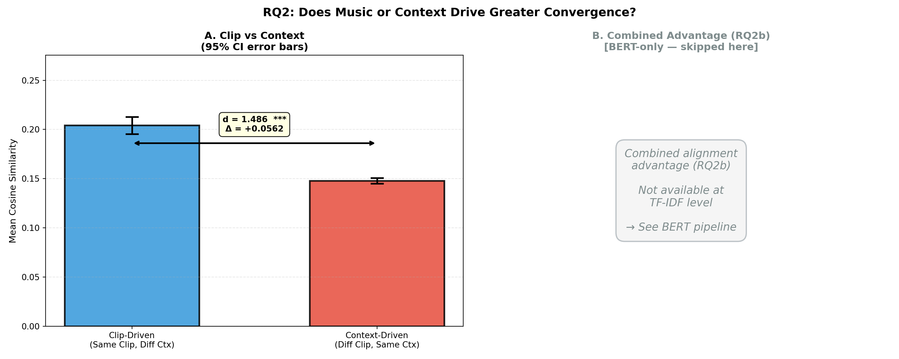
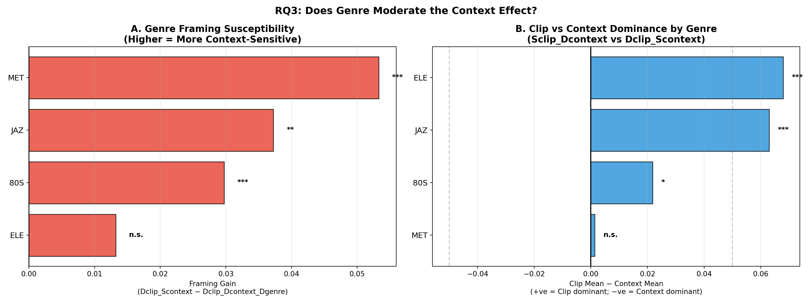
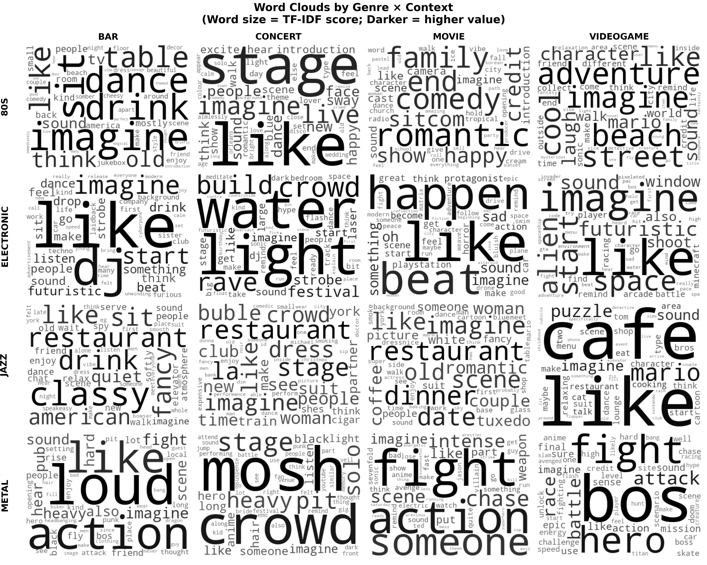
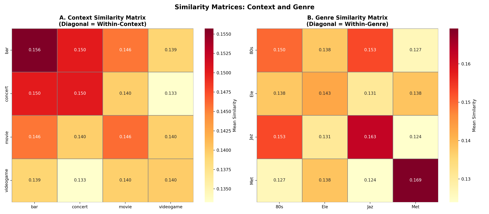

<!DOCTYPE html>
<html xmlns="http://www.w3.org/1999/xhtml" lang="en" xml:lang="en"><head>

<meta charset="utf-8">
<meta name="generator" content="quarto-1.9.36">

<meta name="viewport" content="width=device-width, initial-scale=1.0, user-scalable=yes">

<meta name="author" content="Hazel A. van der Walle (PhD student, Music, Durham University)">
<meta name="dcterms.date" content="2026-04-14">

<title>Framed Listening: TF-IDF Analyses</title>
<style>
/* Default styles provided by pandoc.
** See https://pandoc.org/MANUAL.html#variables-for-html for config info.
*/
code{white-space: pre-wrap;}
span.smallcaps{font-variant: small-caps;}
div.columns{display: flex; gap: min(4vw, 1.5em);}
div.column{flex: auto; overflow-x: auto;}
div.hanging-indent{margin-left: 1.5em; text-indent: -1.5em;}
ul.task-list{list-style: none;}
ul.task-list li input[type="checkbox"] {
  width: 0.8em;
  margin: 0 0.8em 0.2em -1em; /* quarto-specific, see https://github.com/quarto-dev/quarto-cli/issues/4556 */ 
  vertical-align: middle;
}
/* CSS for syntax highlighting */
html { -webkit-text-size-adjust: 100%; }
pre > code.sourceCode { white-space: pre; position: relative; }
pre > code.sourceCode > span { display: inline-block; line-height: 1.25; }
pre > code.sourceCode > span:empty { height: 1.2em; }
.sourceCode { overflow: visible; }
code.sourceCode > span { color: inherit; text-decoration: inherit; }
div.sourceCode { margin: 1em 0; }
pre.sourceCode { margin: 0; }
@media screen {
div.sourceCode { overflow: auto; }
}
@media print {
pre > code.sourceCode { white-space: pre-wrap; }
pre > code.sourceCode > span { text-indent: -5em; padding-left: 5em; }
}
pre.numberSource code
  { counter-reset: source-line 0; }
pre.numberSource code > span
  { position: relative; left: -4em; counter-increment: source-line; }
pre.numberSource code > span > a:first-child::before
  { content: counter(source-line);
    position: relative; left: -1em; text-align: right; vertical-align: baseline;
    border: none; display: inline-block;
    -webkit-touch-callout: none; -webkit-user-select: none;
    -khtml-user-select: none; -moz-user-select: none;
    -ms-user-select: none; user-select: none;
    padding: 0 4px; width: 4em;
  }
pre.numberSource { margin-left: 3em;  padding-left: 4px; }
div.sourceCode
  {   }
@media screen {
pre > code.sourceCode > span > a:first-child::before { text-decoration: underline; }
}
</style>


<script src="TFIDF-analysis_files/libs/clipboard/clipboard.min.js"></script>
<script src="TFIDF-analysis_files/libs/quarto-html/quarto.js" type="module"></script>
<script src="TFIDF-analysis_files/libs/quarto-html/tabsets/tabsets.js" type="module"></script>
<script src="TFIDF-analysis_files/libs/quarto-html/popper.min.js"></script>
<script src="TFIDF-analysis_files/libs/quarto-html/tippy.umd.min.js"></script>
<script src="TFIDF-analysis_files/libs/quarto-html/anchor.min.js"></script>
<link href="TFIDF-analysis_files/libs/quarto-html/tippy.css" rel="stylesheet">
<link href="TFIDF-analysis_files/libs/quarto-html/quarto-syntax-highlighting-845c23b38eaddc0f92fda52bfe77a8c8.css" rel="stylesheet" id="quarto-text-highlighting-styles">
<script src="TFIDF-analysis_files/libs/bootstrap/bootstrap.min.js"></script>
<link href="TFIDF-analysis_files/libs/bootstrap/bootstrap-icons.css" rel="stylesheet">
<link href="TFIDF-analysis_files/libs/bootstrap/bootstrap-8ffd5f67044e5306d9846f29df41dda5.min.css" rel="stylesheet" append-hash="true" id="quarto-bootstrap" data-mode="light">


</head>

<body class="quarto-light">

<div id="quarto-content" class="page-columns page-rows-contents page-layout-article">
<div id="quarto-margin-sidebar" class="sidebar margin-sidebar">
  <nav id="TOC" role="doc-toc" class="toc-active">
    <h2 id="toc-title">Table of contents</h2>
   
  <ul>
  <li><a href="#setup" id="toc-setup" class="nav-link active" data-scroll-target="#setup">Setup</a></li>
  <li><a href="#helper-functions" id="toc-helper-functions" class="nav-link" data-scroll-target="#helper-functions">Helper Functions</a></li>
  <li><a href="#data-preparation" id="toc-data-preparation" class="nav-link" data-scroll-target="#data-preparation">Data Preparation</a>
  <ul class="collapse">
  <li><a href="#load-data" id="toc-load-data" class="nav-link" data-scroll-target="#load-data">Load Data</a></li>
  <li><a href="#tf-idf-vectorisation" id="toc-tf-idf-vectorisation" class="nav-link" data-scroll-target="#tf-idf-vectorisation">TF-IDF Vectorisation</a></li>
  <li><a href="#cosine-similarity-matrix" id="toc-cosine-similarity-matrix" class="nav-link" data-scroll-target="#cosine-similarity-matrix">Cosine Similarity Matrix</a></li>
  <li><a href="#extract-similarity-values-by-condition" id="toc-extract-similarity-values-by-condition" class="nav-link" data-scroll-target="#extract-similarity-values-by-condition">Extract Similarity Values by Condition</a></li>
  </ul></li>
  <li><a href="#linear-mixed-models" id="toc-linear-mixed-models" class="nav-link" data-scroll-target="#linear-mixed-models">Linear Mixed Models</a>
  <ul class="collapse">
  <li><a href="#lmm-setup-prep" id="toc-lmm-setup-prep" class="nav-link" data-scroll-target="#lmm-setup-prep">LMM setup &amp; prep</a></li>
  <li><a href="#lmm-models" id="toc-lmm-models" class="nav-link" data-scroll-target="#lmm-models">LMM Models</a></li>
  <li><a href="#estimated-marginal-means" id="toc-estimated-marginal-means" class="nav-link" data-scroll-target="#estimated-marginal-means">Estimated Marginal Means</a></li>
  <li><a href="#random-forest" id="toc-random-forest" class="nav-link" data-scroll-target="#random-forest">Random Forest</a></li>
  <li><a href="#linear-discriminant-analysis" id="toc-linear-discriminant-analysis" class="nav-link" data-scroll-target="#linear-discriminant-analysis">Linear Discriminant Analysis</a></li>
  </ul></li>
  <li><a href="#rq1-does-context-shape-mimc-similarity" id="toc-rq1-does-context-shape-mimc-similarity" class="nav-link" data-scroll-target="#rq1-does-context-shape-mimc-similarity">RQ1 — Does Context Shape MIMC Similarity?</a>
  <ul class="collapse">
  <li><a href="#omnibus-test" id="toc-omnibus-test" class="nav-link" data-scroll-target="#omnibus-test">Omnibus Test</a></li>
  <li><a href="#context-effect-dclip_scontext-vs-dclip_dcontext_dgenre" id="toc-context-effect-dclip_scontext-vs-dclip_dcontext_dgenre" class="nav-link" data-scroll-target="#context-effect-dclip_scontext-vs-dclip_dcontext_dgenre">Context Effect: Dclip_Scontext vs Dclip_Dcontext_Dgenre</a></li>
  <li><a href="#visualisation" id="toc-visualisation" class="nav-link" data-scroll-target="#visualisation">Visualisation</a></li>
  </ul></li>
  <li><a href="#rq2-music-or-context-which-drives-greater-convergence" id="toc-rq2-music-or-context-which-drives-greater-convergence" class="nav-link" data-scroll-target="#rq2-music-or-context-which-drives-greater-convergence">RQ2 — Music or Context: Which Drives Greater Convergence?</a>
  <ul class="collapse">
  <li><a href="#clip-vs-context" id="toc-clip-vs-context" class="nav-link" data-scroll-target="#clip-vs-context">Clip vs Context</a></li>
  <li><a href="#rq2b-combined-advantage-sclip_scontext-vs-single-factor-conditions" id="toc-rq2b-combined-advantage-sclip_scontext-vs-single-factor-conditions" class="nav-link" data-scroll-target="#rq2b-combined-advantage-sclip_scontext-vs-single-factor-conditions">RQ2b — Combined Advantage: Sclip_Scontext vs Single-Factor Conditions</a></li>
  <li><a href="#visualisation-1" id="toc-visualisation-1" class="nav-link" data-scroll-target="#visualisation-1">Visualisation</a></li>
  </ul></li>
  <li><a href="#rq3-does-genre-moderate-the-context-effect" id="toc-rq3-does-genre-moderate-the-context-effect" class="nav-link" data-scroll-target="#rq3-does-genre-moderate-the-context-effect">RQ3 — Does Genre Moderate the Context Effect?</a>
  <ul class="collapse">
  <li><a href="#framing-susceptibility-by-genre" id="toc-framing-susceptibility-by-genre" class="nav-link" data-scroll-target="#framing-susceptibility-by-genre">Framing Susceptibility by Genre</a></li>
  <li><a href="#within-genre-clip-vs-context-dominance" id="toc-within-genre-clip-vs-context-dominance" class="nav-link" data-scroll-target="#within-genre-clip-vs-context-dominance">Within-Genre Clip vs Context Dominance</a></li>
  <li><a href="#visualisation-2" id="toc-visualisation-2" class="nav-link" data-scroll-target="#visualisation-2">Visualisation</a></li>
  </ul></li>
  <li><a href="#summary" id="toc-summary" class="nav-link" data-scroll-target="#summary">Summary</a></li>
  <li><a href="#exploratory-analyses" id="toc-exploratory-analyses" class="nav-link" data-scroll-target="#exploratory-analyses">Exploratory Analyses</a>
  <ul class="collapse">
  <li><a href="#word-clouds-by-genre-context" id="toc-word-clouds-by-genre-context" class="nav-link" data-scroll-target="#word-clouds-by-genre-context">Word Clouds by Genre × Context</a></li>
  <li><a href="#pairwise-context-and-genre-comparisons" id="toc-pairwise-context-and-genre-comparisons" class="nav-link" data-scroll-target="#pairwise-context-and-genre-comparisons">Pairwise Context and Genre Comparisons</a></li>
  <li><a href="#similarity-matrices" id="toc-similarity-matrices" class="nav-link" data-scroll-target="#similarity-matrices">Similarity Matrices</a></li>
  <li><a href="#document-level-t-sne" id="toc-document-level-t-sne" class="nav-link" data-scroll-target="#document-level-t-sne">Document-Level t-SNE</a></li>
  </ul></li>
  </ul>
</nav>
</div>
<main class="content" id="quarto-document-content">

<header id="title-block-header" class="quarto-title-block default">
<div class="quarto-title">
<h1 class="title">Framed Listening: TF-IDF Analyses</h1>
</div>


<div class="quarto-title-meta">

    <div>
    <div class="quarto-title-meta-heading">Author</div>
    <div class="quarto-title-meta-contents">
             <p>Hazel A. van der Walle (PhD student, Music, Durham University) </p>
          </div>
  </div>
    
    <div>
    <div class="quarto-title-meta-heading">Published</div>
    <div class="quarto-title-meta-contents">
      <p class="date">April 14, 2026</p>
    </div>
  </div>
  
    
  </div>
  


</header>


<p>All datasets generated and used for this study are openly available on GitHub: <a href="https://github.com/HazelvdW/context-framed-listening" class="uri">https://github.com/HazelvdW/context-framed-listening</a>.</p>
<p>This document analyses lexical semantic similarity between music-influenced mental content (MIMC) descriptions at the aggregated document level using TF-IDF cosine similarity. Analyses are organised around three research questions:</p>
<ol type="1">
<li><strong>RQ1 — Context effect</strong>: Do contextual framing cues shape MIMC similarity? Do listeners exposed to the same context produce more semantically similar thoughts than those exposed to entirely different conditions?</li>
<li><strong>RQ2 — Music vs context</strong>: Does music or framing drive greater MIMC convergence? Is similarity higher when listeners share a clip (across contexts) or when they share a context label (across clips)?</li>
<li><strong>RQ3 — Genre moderation</strong>: Does genre moderate the context effect? Are some genres more susceptible to contextual framing than others?</li>
</ol>
<blockquote class="blockquote">
<p><strong>Note on method</strong>: TF-IDF is a bag-of-words method optimised for document-level analysis. Individual short MIMC texts (~10–50 words) produce extremely sparse vectors with minimal lexical overlap; similarity values at that scale would not reflect semantic relationships. This analysis therefore works exclusively with aggregated combMIMC documents (one per clip × context cell, N = 64). Individual- level analysis is handled by BERT.</p>
<p>This document-level lexical analysis complements the BERT semantic similarity pipeline; condition categories are identical across both methods to enable direct cross-method comparison.</p>
</blockquote>
<hr>
<section id="setup" class="level2">
<h2 class="anchored" data-anchor-id="setup">Setup</h2>
<div class="cell">
<div class="cell-output cell-output-stdout">
<pre><code>Using virtual environment '/Users/hazelaileenvanderwalle/.virtualenvs/r-reticulate' ...</code></pre>
</div>
<div class="cell-output cell-output-stderr">
<pre><code>+ /Users/hazelaileenvanderwalle/.virtualenvs/r-reticulate/bin/python -m pip install --upgrade --no-user pandas numpy scikit-learn scipy matplotlib seaborn wordcloud</code></pre>
</div>
</div>
<div class="cell">
<div class="cell-output cell-output-stdout">
<pre><code>Output directory: /Users/hazelaileenvanderwalle/Library/CloudStorage/OneDrive-Personal/work/study/PhD/_PROJECT/_framedListening_NLP/context-framed-listening/NLP_outputs/TFIDF</code></pre>
</div>
</div>
<div class="cell">
<div class="cell-output cell-output-stdout">
<pre><code>Python 3.9.6 (default, Jan  9 2026, 11:03:41) 
[Clang 17.0.0 (clang-1700.6.4.2)]</code></pre>
</div>
<div class="cell-output cell-output-stdout">
<pre><code>----------------------------------------------------</code></pre>
</div>
<div class="cell-output cell-output-stdout">
<pre><code>  numpy                  2.0.2        OK
  pandas                 2.3.3        OK
  scipy                  1.13.1       OK
  sklearn                1.6.1        OK
  matplotlib             3.9.4        OK
  seaborn                0.13.2       OK
  wordcloud              1.9.6        OK</code></pre>
</div>
<div class="cell-output cell-output-stdout">
<pre><code>
All package versions OK.</code></pre>
</div>
</div>
<hr>
</section>
<section id="helper-functions" class="level2">
<h2 class="anchored" data-anchor-id="helper-functions">Helper Functions</h2>
<div class="cell">
<div class="code-copy-outer-scaffold"><div class="sourceCode cell-code" id="cb8"><pre class="sourceCode python code-with-copy"><code class="sourceCode python"><span id="cb8-1"><a href="#cb8-1" aria-hidden="true" tabindex="-1"></a><span class="kw">def</span> sig_marker(p):</span>
<span id="cb8-2"><a href="#cb8-2" aria-hidden="true" tabindex="-1"></a>    <span class="co">"""Return significance marker string for a p-value."""</span></span>
<span id="cb8-3"><a href="#cb8-3" aria-hidden="true" tabindex="-1"></a>    <span class="cf">if</span> p <span class="op">&lt;</span> <span class="fl">0.001</span>: <span class="cf">return</span> <span class="st">"***"</span></span>
<span id="cb8-4"><a href="#cb8-4" aria-hidden="true" tabindex="-1"></a>    <span class="cf">if</span> p <span class="op">&lt;</span> <span class="fl">0.01</span>:  <span class="cf">return</span> <span class="st">"**"</span></span>
<span id="cb8-5"><a href="#cb8-5" aria-hidden="true" tabindex="-1"></a>    <span class="cf">if</span> p <span class="op">&lt;</span> <span class="fl">0.05</span>:  <span class="cf">return</span> <span class="st">"*"</span></span>
<span id="cb8-6"><a href="#cb8-6" aria-hidden="true" tabindex="-1"></a>    <span class="cf">return</span> <span class="st">"n.s."</span></span>
<span id="cb8-7"><a href="#cb8-7" aria-hidden="true" tabindex="-1"></a></span>
<span id="cb8-8"><a href="#cb8-8" aria-hidden="true" tabindex="-1"></a></span>
<span id="cb8-9"><a href="#cb8-9" aria-hidden="true" tabindex="-1"></a><span class="kw">def</span> welch_t(g1, g2):</span>
<span id="cb8-10"><a href="#cb8-10" aria-hidden="true" tabindex="-1"></a>    <span class="co">"""Welch's t-test with Welch-Satterthwaite degrees of freedom.</span></span>
<span id="cb8-11"><a href="#cb8-11" aria-hidden="true" tabindex="-1"></a><span class="co">    Returns (t, p, df)."""</span></span>
<span id="cb8-12"><a href="#cb8-12" aria-hidden="true" tabindex="-1"></a>    n1, n2 <span class="op">=</span> <span class="bu">len</span>(g1), <span class="bu">len</span>(g2)</span>
<span id="cb8-13"><a href="#cb8-13" aria-hidden="true" tabindex="-1"></a>    v1, v2 <span class="op">=</span> g1.var(ddof<span class="op">=</span><span class="dv">1</span>), g2.var(ddof<span class="op">=</span><span class="dv">1</span>)</span>
<span id="cb8-14"><a href="#cb8-14" aria-hidden="true" tabindex="-1"></a>    se     <span class="op">=</span> np.sqrt(v1<span class="op">/</span>n1 <span class="op">+</span> v2<span class="op">/</span>n2)</span>
<span id="cb8-15"><a href="#cb8-15" aria-hidden="true" tabindex="-1"></a>    t      <span class="op">=</span> (g1.mean() <span class="op">-</span> g2.mean()) <span class="op">/</span> se</span>
<span id="cb8-16"><a href="#cb8-16" aria-hidden="true" tabindex="-1"></a>    df     <span class="op">=</span> (v1<span class="op">/</span>n1 <span class="op">+</span> v2<span class="op">/</span>n2)<span class="op">**</span><span class="dv">2</span> <span class="op">/</span> ((v1<span class="op">/</span>n1)<span class="op">**</span><span class="dv">2</span><span class="op">/</span>(n1<span class="op">-</span><span class="dv">1</span>) <span class="op">+</span> (v2<span class="op">/</span>n2)<span class="op">**</span><span class="dv">2</span><span class="op">/</span>(n2<span class="op">-</span><span class="dv">1</span>))</span>
<span id="cb8-17"><a href="#cb8-17" aria-hidden="true" tabindex="-1"></a>    p      <span class="op">=</span> <span class="dv">2</span> <span class="op">*</span> (<span class="dv">1</span> <span class="op">-</span> stats.t.cdf(<span class="bu">abs</span>(t), df))</span>
<span id="cb8-18"><a href="#cb8-18" aria-hidden="true" tabindex="-1"></a>    <span class="cf">return</span> <span class="bu">float</span>(t), <span class="bu">float</span>(p), <span class="bu">float</span>(df)</span>
<span id="cb8-19"><a href="#cb8-19" aria-hidden="true" tabindex="-1"></a></span>
<span id="cb8-20"><a href="#cb8-20" aria-hidden="true" tabindex="-1"></a></span>
<span id="cb8-21"><a href="#cb8-21" aria-hidden="true" tabindex="-1"></a><span class="kw">def</span> cohens_d(g1, g2):</span>
<span id="cb8-22"><a href="#cb8-22" aria-hidden="true" tabindex="-1"></a>    <span class="co">"""Compute Cohen's d effect size."""</span></span>
<span id="cb8-23"><a href="#cb8-23" aria-hidden="true" tabindex="-1"></a>    pooled <span class="op">=</span> np.sqrt((g1.std()<span class="op">**</span><span class="dv">2</span> <span class="op">+</span> g2.std()<span class="op">**</span><span class="dv">2</span>) <span class="op">/</span> <span class="dv">2</span>)</span>
<span id="cb8-24"><a href="#cb8-24" aria-hidden="true" tabindex="-1"></a>    <span class="cf">return</span> <span class="bu">float</span>((g1.mean() <span class="op">-</span> g2.mean()) <span class="op">/</span> pooled) <span class="cf">if</span> pooled <span class="op">&gt;</span> <span class="dv">0</span> <span class="cf">else</span> np.nan</span></code></pre></div><button title="Copy to Clipboard" class="code-copy-button"><i class="bi"></i></button></div>
</div>
<hr>
</section>
<section id="data-preparation" class="level2">
<h2 class="anchored" data-anchor-id="data-preparation">Data Preparation</h2>
<section id="load-data" class="level3">
<h3 class="anchored" data-anchor-id="load-data">Load Data</h3>
<p>Load <strong><code>combMIMC_lvl2a/b.csv</code></strong> — Level 2 preprocessed text data of participants’ MIMC descriptions aggregated into combMIMC documents, generated using <code>NLP-text-prep.qmd</code>.</p>
<div class="cell">
<div class="code-copy-outer-scaffold"><div class="sourceCode cell-code" id="cb9"><pre class="sourceCode python code-with-copy"><code class="sourceCode python"><span id="cb9-1"><a href="#cb9-1" aria-hidden="true" tabindex="-1"></a>data_path <span class="op">=</span> <span class="ss">f"</span><span class="sc">{</span>base_path<span class="sc">}</span><span class="ss">/NLP_outputs/combMIMC_lvl2b.csv"</span> </span>
<span id="cb9-2"><a href="#cb9-2" aria-hidden="true" tabindex="-1"></a>df        <span class="op">=</span> pd.read_csv(data_path)                        </span>
<span id="cb9-3"><a href="#cb9-3" aria-hidden="true" tabindex="-1"></a><span class="co"># lvl2a = aggressive preprocessing with "thought" stop words removed   </span></span>
<span id="cb9-4"><a href="#cb9-4" aria-hidden="true" tabindex="-1"></a><span class="co"># lvl2b retains "thought" words</span></span>
<span id="cb9-5"><a href="#cb9-5" aria-hidden="true" tabindex="-1"></a></span>
<span id="cb9-6"><a href="#cb9-6" aria-hidden="true" tabindex="-1"></a><span class="bu">print</span>(<span class="ss">f"Shape:   </span><span class="sc">{</span>df<span class="sc">.</span>shape<span class="sc">}</span><span class="ss">"</span>)</span></code></pre></div><button title="Copy to Clipboard" class="code-copy-button"><i class="bi"></i></button></div>
<div class="cell-output cell-output-stdout">
<pre><code>Shape:   (64, 7)</code></pre>
</div>
<div class="code-copy-outer-scaffold"><div class="sourceCode cell-code" id="cb11"><pre class="sourceCode python code-with-copy"><code class="sourceCode python"><span id="cb11-1"><a href="#cb11-1" aria-hidden="true" tabindex="-1"></a><span class="bu">print</span>(<span class="ss">f"Columns: </span><span class="sc">{</span>df<span class="sc">.</span>columns<span class="sc">.</span>tolist()<span class="sc">}</span><span class="ss">"</span>)</span></code></pre></div><button title="Copy to Clipboard" class="code-copy-button"><i class="bi"></i></button></div>
<div class="cell-output cell-output-stdout">
<pre><code>Columns: ['context_word', 'genre_code', 'clip_name', 'ClipContext_pair', 'GenreContext_pair', 'textMIMC_lvl2b', 'text_original']</code></pre>
</div>
<div class="code-copy-outer-scaffold"><div class="sourceCode cell-code" id="cb13"><pre class="sourceCode python code-with-copy"><code class="sourceCode python"><span id="cb13-1"><a href="#cb13-1" aria-hidden="true" tabindex="-1"></a><span class="bu">print</span>(<span class="ss">f"</span><span class="ch">\n</span><span class="ss">Unique clips:    </span><span class="sc">{</span><span class="bu">sorted</span>(df[<span class="st">'clip_name'</span>].unique())<span class="sc">}</span><span class="ss">"</span>)</span></code></pre></div><button title="Copy to Clipboard" class="code-copy-button"><i class="bi"></i></button></div>
<div class="cell-output cell-output-stdout">
<pre><code>
Unique clips:    ['80s_LOW_02', '80s_LOW_06', '80s_MED_08', '80s_MED_13', 'Ele_LOW_09', 'Ele_LOW_14', 'Ele_MED_19', 'Ele_MED_20', 'Jaz_LOW_19', 'Jaz_LOW_21', 'Jaz_MED_02', 'Jaz_MED_07', 'Met_LOW_09', 'Met_LOW_14', 'Met_MED_19', 'Met_MED_20']</code></pre>
</div>
<div class="code-copy-outer-scaffold"><div class="sourceCode cell-code" id="cb15"><pre class="sourceCode python code-with-copy"><code class="sourceCode python"><span id="cb15-1"><a href="#cb15-1" aria-hidden="true" tabindex="-1"></a><span class="bu">print</span>(<span class="ss">f"Unique contexts: </span><span class="sc">{</span><span class="bu">sorted</span>(df[<span class="st">'context_word'</span>].unique())<span class="sc">}</span><span class="ss">"</span>)</span></code></pre></div><button title="Copy to Clipboard" class="code-copy-button"><i class="bi"></i></button></div>
<div class="cell-output cell-output-stdout">
<pre><code>Unique contexts: ['bar', 'concert', 'movie', 'videogame']</code></pre>
</div>
<div class="code-copy-outer-scaffold"><div class="sourceCode cell-code" id="cb17"><pre class="sourceCode python code-with-copy"><code class="sourceCode python"><span id="cb17-1"><a href="#cb17-1" aria-hidden="true" tabindex="-1"></a><span class="bu">print</span>(<span class="ss">f"Unique genres:   </span><span class="sc">{</span><span class="bu">sorted</span>(df[<span class="st">'genre_code'</span>].unique())<span class="sc">}</span><span class="ss">"</span>)</span></code></pre></div><button title="Copy to Clipboard" class="code-copy-button"><i class="bi"></i></button></div>
<div class="cell-output cell-output-stdout">
<pre><code>Unique genres:   ['80s', 'Ele', 'Jaz', 'Met']</code></pre>
</div>
<div class="code-copy-outer-scaffold"><div class="sourceCode cell-code" id="cb19"><pre class="sourceCode python code-with-copy"><code class="sourceCode python"><span id="cb19-1"><a href="#cb19-1" aria-hidden="true" tabindex="-1"></a><span class="bu">print</span>(<span class="ss">f"</span><span class="ch">\n</span><span class="ss">Total combMIMC documents: </span><span class="sc">{</span><span class="bu">len</span>(df)<span class="sc">}</span><span class="ss">"</span>)</span></code></pre></div><button title="Copy to Clipboard" class="code-copy-button"><i class="bi"></i></button></div>
<div class="cell-output cell-output-stdout">
<pre><code>
Total combMIMC documents: 64</code></pre>
</div>
<div class="code-copy-outer-scaffold"><div class="sourceCode cell-code" id="cb21"><pre class="sourceCode python code-with-copy"><code class="sourceCode python"><span id="cb21-1"><a href="#cb21-1" aria-hidden="true" tabindex="-1"></a>df.head(<span class="dv">4</span>)</span></code></pre></div><button title="Copy to Clipboard" class="code-copy-button"><i class="bi"></i></button></div>
<div class="cell-output cell-output-stdout">
<pre><code>  context_word  ...                                      text_original
0          bar  ...  kind of sad melancholy not happy or upbeat emo...
1          bar  ...  the music felt really 80s and so it was an ima...
2          bar  ...  i think about an old 80s movie that takes plac...
3          bar  ...  i could only think about sitting on the couch ...

[4 rows x 7 columns]</code></pre>
</div>
</div>
</section>
<section id="tf-idf-vectorisation" class="level3">
<h3 class="anchored" data-anchor-id="tf-idf-vectorisation">TF-IDF Vectorisation</h3>
<div class="cell">
<div class="cell-output cell-output-stdout">
<pre><code>TF-IDF matrix shape: (64, 3315)</code></pre>
</div>
<div class="cell-output cell-output-stdout">
<pre><code>  -&gt; 64 documents x 3315 terms</code></pre>
</div>
<div class="cell-output cell-output-stdout">
<pre><code>Matrix density: 0.0637</code></pre>
</div>
<div class="cell-output cell-output-stdout">
<pre><code>
Top 20 terms by mean TF-IDF:</code></pre>
</div>
<div class="cell-output cell-output-stdout">
<pre><code>like         0.063314
imagine      0.062485
sound        0.051336
scene        0.046185
think        0.044116
make         0.042154
people       0.041130
remind       0.037347
dance        0.036263
character    0.034620
something    0.034355
get          0.033599
feel         0.033350
one          0.032823
thought      0.032441
old          0.032322
start        0.032077
hear         0.031700
go           0.031046
show         0.030752</code></pre>
</div>
</div>
</section>
<section id="cosine-similarity-matrix" class="level3">
<h3 class="anchored" data-anchor-id="cosine-similarity-matrix">Cosine Similarity Matrix</h3>
<div class="cell">
<div class="cell-output cell-output-stdout">
<pre><code>Cosine similarity matrix shape: (64, 64)</code></pre>
</div>
<div class="cell-output cell-output-stdout">
<pre><code>Value range:  [0.0661, 1.0000]</code></pre>
</div>
<div class="cell-output cell-output-stdout">
<pre><code>Mean off-diagonal similarity: 0.1428</code></pre>
</div>
</div>
</section>
<section id="extract-similarity-values-by-condition" class="level3">
<h3 class="anchored" data-anchor-id="extract-similarity-values-by-condition">Extract Similarity Values by Condition</h3>
<p>The pairwise matrix is unpacked into a tidy long-format DataFrame. Each row is a unique document pair annotated with condition labels.</p>
<table class="caption-top table">
<colgroup>
<col style="width: 50%">
<col style="width: 50%">
</colgroup>
<thead>
<tr class="header">
<th>Condition</th>
<th>Description</th>
</tr>
</thead>
<tbody>
<tr class="odd">
<td><code>Sclip_Scontext</code></td>
<td>Same clip <strong>and</strong> same context — combined alignment</td>
</tr>
<tr class="even">
<td><code>Sclip_Dcontext</code></td>
<td>Same clip, different context — isolates <strong>clip</strong> influence</td>
</tr>
<tr class="odd">
<td><code>Dclip_Scontext</code></td>
<td>Different clip, same context — isolates <strong>context</strong> influence</td>
</tr>
<tr class="even">
<td><code>Dclip_Dcontext_Sgenre</code></td>
<td>Both different, same genre</td>
</tr>
<tr class="odd">
<td><code>Dclip_Dcontext_Dgenre</code></td>
<td>Entirely different — dissimilarity baseline</td>
</tr>
</tbody>
</table>
<div class="cell">
<div class="cell-output cell-output-stdout">
<pre><code>Total unique pairs: 2016</code></pre>
</div>
<div class="cell-output cell-output-stdout">
<pre><code>
Condition distribution:</code></pre>
</div>
<div class="cell-output cell-output-stdout">
<pre><code>condition
Dclip_Dcontext_Dgenre    1152
Dclip_Dcontext_Sgenre     288
Dclip_Scontext            480
Sclip_Dcontext             96</code></pre>
</div>
<div class="cell-output cell-output-stdout">
<pre><code>
Saved similarity data</code></pre>
</div>
</div>
</section>
</section>
<section id="linear-mixed-models" class="level2">
<h2 class="anchored" data-anchor-id="linear-mixed-models">Linear Mixed Models</h2>
<p>Linear mixed models (LMMs) provide a complementary, model-based approach to the pairwise t-tests above. The outcome is pairwise cosine similarity; fixed effects are <code>context_comb</code> (the context labels from the pair) and <code>genre_comb</code> (the genres of items in the pair); <code>item_i</code> and <code>item_j</code> are included as a random intercept to account for the fact that each individual response appears in multiple pairs.</p>
<p>Three models are fitted in sequence. Model 1 tests main effects of context, genre, and clip — clip is included as both a fixed and random effect to separate clip-specific idiosyncrasies from the genre signal, since genre is fully nested within clip. Model 2 adds mean believability (from the supplementary study) as a covariate at the clip × context cell level (64 unique values, one per clip–context pairing) — this gives genuine within-context variation in believability and avoids the collinearity that would arise from collapsing to context-level means. Model 3 tests the context × genre interaction while retaining clip as a covariate. Model comparisons use likelihood ratio tests (ANOVA on nested models) to determine whether each additional term improves fit.</p>
<p>Following the LMMs, estimated marginal means (emmeans) unpack pairwise context differences while controlling for genre. Finally, a Random Forest classifier and a Linear Discriminant Analysis (LDA) are used to assess how well context condition can be recovered from similarity scores alone.</p>
<section id="lmm-setup-prep" class="level3">
<h3 class="anchored" data-anchor-id="lmm-setup-prep">LMM setup &amp; prep</h3>
<div class="cell">
<div class="code-copy-outer-scaffold"><div class="sourceCode cell-code" id="cb35"><pre class="sourceCode r code-with-copy"><code class="sourceCode r"><span id="cb35-1"><a href="#cb35-1" aria-hidden="true" tabindex="-1"></a><span class="co"># ── Packages ──────────────────────────────────────────────────────────────────</span></span>
<span id="cb35-2"><a href="#cb35-2" aria-hidden="true" tabindex="-1"></a>required <span class="ot">&lt;-</span> <span class="fu">c</span>(<span class="st">"lme4"</span>, <span class="st">"lmerTest"</span>, <span class="st">"MuMIn"</span>, <span class="st">"emmeans"</span>,</span>
<span id="cb35-3"><a href="#cb35-3" aria-hidden="true" tabindex="-1"></a>              <span class="st">"randomForest"</span>, <span class="st">"MASS"</span>, <span class="st">"dplyr"</span>, <span class="st">"ggplot2"</span>)</span>
<span id="cb35-4"><a href="#cb35-4" aria-hidden="true" tabindex="-1"></a><span class="cf">for</span> (pkg <span class="cf">in</span> required) {</span>
<span id="cb35-5"><a href="#cb35-5" aria-hidden="true" tabindex="-1"></a>  <span class="cf">if</span> (<span class="sc">!</span><span class="fu">requireNamespace</span>(pkg, <span class="at">quietly =</span> <span class="cn">TRUE</span>))</span>
<span id="cb35-6"><a href="#cb35-6" aria-hidden="true" tabindex="-1"></a>    <span class="fu">install.packages</span>(pkg, <span class="at">repos =</span> <span class="st">"https://cloud.r-project.org"</span>)</span>
<span id="cb35-7"><a href="#cb35-7" aria-hidden="true" tabindex="-1"></a>  <span class="fu">library</span>(pkg, <span class="at">character.only =</span> <span class="cn">TRUE</span>)</span>
<span id="cb35-8"><a href="#cb35-8" aria-hidden="true" tabindex="-1"></a>}</span></code></pre></div><button title="Copy to Clipboard" class="code-copy-button"><i class="bi"></i></button></div>
<div class="cell-output cell-output-stderr">
<pre><code>Loading required package: Matrix</code></pre>
</div>
<div class="cell-output cell-output-stderr">
<pre><code>
Attaching package: 'lmerTest'</code></pre>
</div>
<div class="cell-output cell-output-stderr">
<pre><code>The following object is masked from 'package:lme4':

    lmer</code></pre>
</div>
<div class="cell-output cell-output-stderr">
<pre><code>The following object is masked from 'package:stats':

    step</code></pre>
</div>
<div class="cell-output cell-output-stderr">
<pre><code>Welcome to emmeans.
Caution: You lose important information if you filter this package's results.
See '? untidy'</code></pre>
</div>
<div class="cell-output cell-output-stderr">
<pre><code>randomForest 4.7-1.2</code></pre>
</div>
<div class="cell-output cell-output-stderr">
<pre><code>Type rfNews() to see new features/changes/bug fixes.</code></pre>
</div>
<div class="cell-output cell-output-stderr">
<pre><code>
Attaching package: 'randomForest'</code></pre>
</div>
<div class="cell-output cell-output-stderr">
<pre><code>The following object is masked from 'package:MuMIn':

    importance</code></pre>
</div>
<div class="cell-output cell-output-stderr">
<pre><code>
Attaching package: 'dplyr'</code></pre>
</div>
<div class="cell-output cell-output-stderr">
<pre><code>The following object is masked from 'package:MASS':

    select</code></pre>
</div>
<div class="cell-output cell-output-stderr">
<pre><code>The following object is masked from 'package:randomForest':

    combine</code></pre>
</div>
<div class="cell-output cell-output-stderr">
<pre><code>The following objects are masked from 'package:stats':

    filter, lag</code></pre>
</div>
<div class="cell-output cell-output-stderr">
<pre><code>The following objects are masked from 'package:base':

    intersect, setdiff, setequal, union</code></pre>
</div>
<div class="cell-output cell-output-stderr">
<pre><code>
Attaching package: 'ggplot2'</code></pre>
</div>
<div class="cell-output cell-output-stderr">
<pre><code>The following object is masked from 'package:randomForest':

    margin</code></pre>
</div>
<div class="code-copy-outer-scaffold"><div class="sourceCode cell-code" id="cb52"><pre class="sourceCode r code-with-copy"><code class="sourceCode r"><span id="cb52-1"><a href="#cb52-1" aria-hidden="true" tabindex="-1"></a><span class="co"># ── Paths (inherit from Python session via reticulate base_path) ──────────────</span></span>
<span id="cb52-2"><a href="#cb52-2" aria-hidden="true" tabindex="-1"></a>base_path  <span class="ot">&lt;-</span> <span class="fu">paste0</span>(</span>
<span id="cb52-3"><a href="#cb52-3" aria-hidden="true" tabindex="-1"></a>  <span class="st">"/Users/hazelaileenvanderwalle/Library/CloudStorage/"</span>,</span>
<span id="cb52-4"><a href="#cb52-4" aria-hidden="true" tabindex="-1"></a>  <span class="st">"OneDrive-Personal/work/study/PhD/_PROJECT/"</span>,</span>
<span id="cb52-5"><a href="#cb52-5" aria-hidden="true" tabindex="-1"></a>  <span class="st">"_framedListening_NLP/context-framed-listening"</span></span>
<span id="cb52-6"><a href="#cb52-6" aria-hidden="true" tabindex="-1"></a>)</span>
<span id="cb52-7"><a href="#cb52-7" aria-hidden="true" tabindex="-1"></a>output_dir <span class="ot">&lt;-</span> <span class="fu">file.path</span>(base_path, <span class="st">"NLP_outputs"</span>, <span class="st">"TFIDF"</span>)</span>
<span id="cb52-8"><a href="#cb52-8" aria-hidden="true" tabindex="-1"></a></span>
<span id="cb52-9"><a href="#cb52-9" aria-hidden="true" tabindex="-1"></a><span class="co"># Load pairwise similarity data (written by the Python chunk above)</span></span>
<span id="cb52-10"><a href="#cb52-10" aria-hidden="true" tabindex="-1"></a>sim_df_path <span class="ot">&lt;-</span> <span class="fu">file.path</span>(output_dir,</span>
<span id="cb52-11"><a href="#cb52-11" aria-hidden="true" tabindex="-1"></a>                         <span class="fu">paste0</span>(<span class="st">"TFIDF_similarity_by_condition.csv"</span>))</span>
<span id="cb52-12"><a href="#cb52-12" aria-hidden="true" tabindex="-1"></a>sim_df      <span class="ot">&lt;-</span> <span class="fu">read.csv</span>(sim_df_path, <span class="at">stringsAsFactors =</span> <span class="cn">FALSE</span>)</span>
<span id="cb52-13"><a href="#cb52-13" aria-hidden="true" tabindex="-1"></a></span>
<span id="cb52-14"><a href="#cb52-14" aria-hidden="true" tabindex="-1"></a><span class="fu">cat</span>(<span class="st">"Loaded similarity data:"</span>, <span class="fu">nrow</span>(sim_df), <span class="st">"pairs</span><span class="sc">\n</span><span class="st">"</span>)</span></code></pre></div><button title="Copy to Clipboard" class="code-copy-button"><i class="bi"></i></button></div>
<div class="cell-output cell-output-stdout">
<pre><code>Loaded similarity data: 2016 pairs</code></pre>
</div>
<div class="code-copy-outer-scaffold"><div class="sourceCode cell-code" id="cb54"><pre class="sourceCode r code-with-copy"><code class="sourceCode r"><span id="cb54-1"><a href="#cb54-1" aria-hidden="true" tabindex="-1"></a><span class="fu">cat</span>(<span class="st">"Columns:"</span>, <span class="fu">paste</span>(<span class="fu">names</span>(sim_df), <span class="at">collapse =</span> <span class="st">", "</span>), <span class="st">"</span><span class="sc">\n</span><span class="st">"</span>)</span></code></pre></div><button title="Copy to Clipboard" class="code-copy-button"><i class="bi"></i></button></div>
<div class="cell-output cell-output-stdout">
<pre><code>Columns: item_i, item_j, similarity, same_clip, same_context, same_genre, condition, clip_i, clip_j, context_i, context_j, genre_i, genre_j </code></pre>
</div>
</div>
<div class="cell">
<div class="code-copy-outer-scaffold"><div class="sourceCode cell-code" id="cb56"><pre class="sourceCode r code-with-copy"><code class="sourceCode r"><span id="cb56-1"><a href="#cb56-1" aria-hidden="true" tabindex="-1"></a><span class="co"># Using sum-to-zero (effects) coding so no reference level is used —</span></span>
<span id="cb56-2"><a href="#cb56-2" aria-hidden="true" tabindex="-1"></a><span class="co"># each coefficient represents deviation from the grand mean,</span></span>
<span id="cb56-3"><a href="#cb56-3" aria-hidden="true" tabindex="-1"></a><span class="co"># anova() gives Type III tests for each level independently</span></span>
<span id="cb56-4"><a href="#cb56-4" aria-hidden="true" tabindex="-1"></a><span class="fu">options</span>(<span class="at">contrasts =</span> <span class="fu">c</span>(<span class="st">"contr.sum"</span>, <span class="st">"contr.poly"</span>))</span>
<span id="cb56-5"><a href="#cb56-5" aria-hidden="true" tabindex="-1"></a></span>
<span id="cb56-6"><a href="#cb56-6" aria-hidden="true" tabindex="-1"></a><span class="co"># Define similarity pair combination variables</span></span>
<span id="cb56-7"><a href="#cb56-7" aria-hidden="true" tabindex="-1"></a>sim_df<span class="sc">$</span>genre_comb   <span class="ot">&lt;-</span> <span class="fu">paste0</span>(sim_df<span class="sc">$</span>genre_i,  <span class="st">"_"</span>,sim_df<span class="sc">$</span>genre_j)</span>
<span id="cb56-8"><a href="#cb56-8" aria-hidden="true" tabindex="-1"></a>sim_df<span class="sc">$</span>context_comb <span class="ot">&lt;-</span> <span class="fu">paste0</span>(sim_df<span class="sc">$</span>context_i,<span class="st">"_"</span>,sim_df<span class="sc">$</span>context_j)</span>
<span id="cb56-9"><a href="#cb56-9" aria-hidden="true" tabindex="-1"></a>sim_df<span class="sc">$</span>clip_comb    <span class="ot">&lt;-</span> <span class="fu">paste0</span>(sim_df<span class="sc">$</span>clip_i,   <span class="st">"_"</span>,sim_df<span class="sc">$</span>clip_j)</span>
<span id="cb56-10"><a href="#cb56-10" aria-hidden="true" tabindex="-1"></a></span>
<span id="cb56-11"><a href="#cb56-11" aria-hidden="true" tabindex="-1"></a><span class="fu">cat</span>(<span class="st">"genre_comb levels:</span><span class="sc">\n</span><span class="st">"</span>);     <span class="fu">print</span>(<span class="fu">table</span>(sim_df<span class="sc">$</span>genre_comb))</span></code></pre></div><button title="Copy to Clipboard" class="code-copy-button"><i class="bi"></i></button></div>
<div class="cell-output cell-output-stdout">
<pre><code>genre_comb levels:</code></pre>
</div>
<div class="cell-output cell-output-stdout">
<pre><code>
80s_80s 80s_Ele 80s_Jaz 80s_Met Ele_80s Ele_Ele Ele_Jaz Ele_Met Jaz_80s Jaz_Ele 
    120     160     160     160      96     120     160     160      96      96 
Jaz_Jaz Jaz_Met Met_80s Met_Ele Met_Jaz Met_Met 
    120     160      96      96      96     120 </code></pre>
</div>
<div class="code-copy-outer-scaffold"><div class="sourceCode cell-code" id="cb59"><pre class="sourceCode r code-with-copy"><code class="sourceCode r"><span id="cb59-1"><a href="#cb59-1" aria-hidden="true" tabindex="-1"></a><span class="fu">cat</span>(<span class="st">"</span><span class="sc">\n</span><span class="st">context_comb levels:</span><span class="sc">\n</span><span class="st">"</span>); <span class="fu">print</span>(<span class="fu">table</span>(sim_df<span class="sc">$</span>context_comb))</span></code></pre></div><button title="Copy to Clipboard" class="code-copy-button"><i class="bi"></i></button></div>
<div class="cell-output cell-output-stdout">
<pre><code>
context_comb levels:</code></pre>
</div>
<div class="cell-output cell-output-stdout">
<pre><code>
            bar_bar         bar_concert           bar_movie       bar_videogame 
                120                 256                 256                 256 
    concert_concert       concert_movie   concert_videogame         movie_movie 
                120                 256                 256                 120 
    movie_videogame videogame_videogame 
                256                 120 </code></pre>
</div>
<div class="code-copy-outer-scaffold"><div class="sourceCode cell-code" id="cb62"><pre class="sourceCode r code-with-copy"><code class="sourceCode r"><span id="cb62-1"><a href="#cb62-1" aria-hidden="true" tabindex="-1"></a><span class="co"># clip_comb levels levels not pasted as it's quite long</span></span>
<span id="cb62-2"><a href="#cb62-2" aria-hidden="true" tabindex="-1"></a></span>
<span id="cb62-3"><a href="#cb62-3" aria-hidden="true" tabindex="-1"></a><span class="co"># Factor predictors — comb variables as factors for the LMMs</span></span>
<span id="cb62-4"><a href="#cb62-4" aria-hidden="true" tabindex="-1"></a>sim_df<span class="sc">$</span>genre_comb   <span class="ot">&lt;-</span> <span class="fu">factor</span>(sim_df<span class="sc">$</span>genre_comb)</span>
<span id="cb62-5"><a href="#cb62-5" aria-hidden="true" tabindex="-1"></a>sim_df<span class="sc">$</span>context_comb <span class="ot">&lt;-</span> <span class="fu">factor</span>(sim_df<span class="sc">$</span>context_comb)</span>
<span id="cb62-6"><a href="#cb62-6" aria-hidden="true" tabindex="-1"></a>sim_df<span class="sc">$</span>clip_comb    <span class="ot">&lt;-</span> <span class="fu">factor</span>(sim_df<span class="sc">$</span>clip_comb)</span>
<span id="cb62-7"><a href="#cb62-7" aria-hidden="true" tabindex="-1"></a>sim_df<span class="sc">$</span>item_i       <span class="ot">&lt;-</span> <span class="fu">factor</span>(sim_df<span class="sc">$</span>item_i)</span>
<span id="cb62-8"><a href="#cb62-8" aria-hidden="true" tabindex="-1"></a>sim_df<span class="sc">$</span>item_j       <span class="ot">&lt;-</span> <span class="fu">factor</span>(sim_df<span class="sc">$</span>item_j)</span>
<span id="cb62-9"><a href="#cb62-9" aria-hidden="true" tabindex="-1"></a></span>
<span id="cb62-10"><a href="#cb62-10" aria-hidden="true" tabindex="-1"></a><span class="fu">cat</span>(<span class="st">"</span><span class="sc">\n</span><span class="st">context_comb levels:"</span>, <span class="fu">nlevels</span>(sim_df<span class="sc">$</span>context_comb), <span class="st">"</span><span class="sc">\n</span><span class="st">"</span>)</span></code></pre></div><button title="Copy to Clipboard" class="code-copy-button"><i class="bi"></i></button></div>
<div class="cell-output cell-output-stdout">
<pre><code>
context_comb levels: 10 </code></pre>
</div>
<div class="code-copy-outer-scaffold"><div class="sourceCode cell-code" id="cb64"><pre class="sourceCode r code-with-copy"><code class="sourceCode r"><span id="cb64-1"><a href="#cb64-1" aria-hidden="true" tabindex="-1"></a><span class="fu">cat</span>(<span class="st">"</span><span class="sc">\n</span><span class="st">genre_comb levels:  "</span>, <span class="fu">nlevels</span>(sim_df<span class="sc">$</span>genre_comb),   <span class="st">"</span><span class="sc">\n</span><span class="st">"</span>)</span></code></pre></div><button title="Copy to Clipboard" class="code-copy-button"><i class="bi"></i></button></div>
<div class="cell-output cell-output-stdout">
<pre><code>
genre_comb levels:   16 </code></pre>
</div>
<div class="code-copy-outer-scaffold"><div class="sourceCode cell-code" id="cb66"><pre class="sourceCode r code-with-copy"><code class="sourceCode r"><span id="cb66-1"><a href="#cb66-1" aria-hidden="true" tabindex="-1"></a><span class="fu">cat</span>(<span class="st">"</span><span class="sc">\n</span><span class="st">clip_comb levels:   "</span>, <span class="fu">nlevels</span>(sim_df<span class="sc">$</span>clip_comb),    <span class="st">"</span><span class="sc">\n</span><span class="st">"</span>)</span></code></pre></div><button title="Copy to Clipboard" class="code-copy-button"><i class="bi"></i></button></div>
<div class="cell-output cell-output-stdout">
<pre><code>
clip_comb levels:    256 </code></pre>
</div>
<div class="code-copy-outer-scaffold"><div class="sourceCode cell-code" id="cb68"><pre class="sourceCode r code-with-copy"><code class="sourceCode r"><span id="cb68-1"><a href="#cb68-1" aria-hidden="true" tabindex="-1"></a><span class="co"># ── Believability covariate ───────────────────────────────────────────────────</span></span>
<span id="cb68-2"><a href="#cb68-2" aria-hidden="true" tabindex="-1"></a>supp_path <span class="ot">&lt;-</span> <span class="fu">file.path</span>(base_path, <span class="st">"dataSUPPstudy.csv"</span>)</span>
<span id="cb68-3"><a href="#cb68-3" aria-hidden="true" tabindex="-1"></a>supp      <span class="ot">&lt;-</span> <span class="fu">read.csv</span>(supp_path, <span class="at">stringsAsFactors =</span> <span class="cn">FALSE</span>)</span>
<span id="cb68-4"><a href="#cb68-4" aria-hidden="true" tabindex="-1"></a></span>
<span id="cb68-5"><a href="#cb68-5" aria-hidden="true" tabindex="-1"></a>believe_cell <span class="ot">&lt;-</span> supp <span class="sc">|&gt;</span></span>
<span id="cb68-6"><a href="#cb68-6" aria-hidden="true" tabindex="-1"></a>  <span class="fu">group_by</span>(clip_name, context_word) <span class="sc">|&gt;</span></span>
<span id="cb68-7"><a href="#cb68-7" aria-hidden="true" tabindex="-1"></a>  <span class="fu">summarise</span>(<span class="at">believability =</span> <span class="fu">mean</span>(rating_likelihood.response, <span class="at">na.rm =</span> <span class="cn">TRUE</span>),</span>
<span id="cb68-8"><a href="#cb68-8" aria-hidden="true" tabindex="-1"></a>            <span class="at">.groups =</span> <span class="st">"drop"</span>)</span>
<span id="cb68-9"><a href="#cb68-9" aria-hidden="true" tabindex="-1"></a></span>
<span id="cb68-10"><a href="#cb68-10" aria-hidden="true" tabindex="-1"></a>believe_cell<span class="sc">$</span>clip_merge <span class="ot">&lt;-</span> <span class="fu">tolower</span>(<span class="fu">sapply</span>(</span>
<span id="cb68-11"><a href="#cb68-11" aria-hidden="true" tabindex="-1"></a>  <span class="fu">strsplit</span>(<span class="fu">sub</span>(<span class="st">"</span><span class="sc">\\</span><span class="st">.mp3$"</span>, <span class="st">""</span>, believe_cell<span class="sc">$</span>clip_name), <span class="st">"_"</span>),</span>
<span id="cb68-12"><a href="#cb68-12" aria-hidden="true" tabindex="-1"></a>  <span class="cf">function</span>(x) {</span>
<span id="cb68-13"><a href="#cb68-13" aria-hidden="true" tabindex="-1"></a>    prefix <span class="ot">&lt;-</span> <span class="cf">switch</span>(<span class="fu">tolower</span>(x[<span class="dv">1</span>]),</span>
<span id="cb68-14"><a href="#cb68-14" aria-hidden="true" tabindex="-1"></a>      <span class="st">"electronic"</span> <span class="ot">=</span> <span class="st">"ele"</span>, <span class="st">"jazz"</span> <span class="ot">=</span> <span class="st">"jaz"</span>, <span class="st">"metal"</span> <span class="ot">=</span> <span class="st">"met"</span>, <span class="fu">tolower</span>(x[<span class="dv">1</span>]))</span>
<span id="cb68-15"><a href="#cb68-15" aria-hidden="true" tabindex="-1"></a>    <span class="fu">paste</span>(<span class="fu">c</span>(prefix, x[<span class="dv">2</span>], x[<span class="dv">3</span>]), <span class="at">collapse =</span> <span class="st">"_"</span>)</span>
<span id="cb68-16"><a href="#cb68-16" aria-hidden="true" tabindex="-1"></a>  }</span>
<span id="cb68-17"><a href="#cb68-17" aria-hidden="true" tabindex="-1"></a>))</span>
<span id="cb68-18"><a href="#cb68-18" aria-hidden="true" tabindex="-1"></a>believe_cell<span class="sc">$</span>cntx_merge <span class="ot">&lt;-</span> <span class="fu">trimws</span>(<span class="fu">tolower</span>(believe_cell<span class="sc">$</span>context_word))</span>
<span id="cb68-19"><a href="#cb68-19" aria-hidden="true" tabindex="-1"></a></span>
<span id="cb68-20"><a href="#cb68-20" aria-hidden="true" tabindex="-1"></a><span class="co"># Merge believability for item i</span></span>
<span id="cb68-21"><a href="#cb68-21" aria-hidden="true" tabindex="-1"></a>sim_df<span class="sc">$</span>clip_i_merge <span class="ot">&lt;-</span> <span class="fu">trimws</span>(<span class="fu">tolower</span>(<span class="fu">as.character</span>(sim_df<span class="sc">$</span>clip_i)))</span>
<span id="cb68-22"><a href="#cb68-22" aria-hidden="true" tabindex="-1"></a>sim_df<span class="sc">$</span>cntx_i_merge  <span class="ot">&lt;-</span> <span class="fu">trimws</span>(<span class="fu">tolower</span>(<span class="fu">as.character</span>(sim_df<span class="sc">$</span>context_i)))</span>
<span id="cb68-23"><a href="#cb68-23" aria-hidden="true" tabindex="-1"></a></span>
<span id="cb68-24"><a href="#cb68-24" aria-hidden="true" tabindex="-1"></a>sim_df <span class="ot">&lt;-</span> <span class="fu">merge</span>(sim_df, believe_cell[, <span class="fu">c</span>(<span class="st">"clip_merge"</span>, <span class="st">"cntx_merge"</span>, <span class="st">"believability"</span>)],</span>
<span id="cb68-25"><a href="#cb68-25" aria-hidden="true" tabindex="-1"></a>                <span class="at">by.x =</span> <span class="fu">c</span>(<span class="st">"clip_i_merge"</span>, <span class="st">"cntx_i_merge"</span>),</span>
<span id="cb68-26"><a href="#cb68-26" aria-hidden="true" tabindex="-1"></a>                <span class="at">by.y =</span> <span class="fu">c</span>(<span class="st">"clip_merge"</span>,   <span class="st">"cntx_merge"</span>),</span>
<span id="cb68-27"><a href="#cb68-27" aria-hidden="true" tabindex="-1"></a>                <span class="at">all.x =</span> <span class="cn">TRUE</span>)</span>
<span id="cb68-28"><a href="#cb68-28" aria-hidden="true" tabindex="-1"></a><span class="fu">names</span>(sim_df)[<span class="fu">names</span>(sim_df) <span class="sc">==</span> <span class="st">"believability"</span>] <span class="ot">&lt;-</span> <span class="st">"believability_i"</span></span>
<span id="cb68-29"><a href="#cb68-29" aria-hidden="true" tabindex="-1"></a></span>
<span id="cb68-30"><a href="#cb68-30" aria-hidden="true" tabindex="-1"></a><span class="co"># Merge believability for item j</span></span>
<span id="cb68-31"><a href="#cb68-31" aria-hidden="true" tabindex="-1"></a>sim_df<span class="sc">$</span>clip_j_merge <span class="ot">&lt;-</span> <span class="fu">trimws</span>(<span class="fu">tolower</span>(<span class="fu">as.character</span>(sim_df<span class="sc">$</span>clip_j)))</span>
<span id="cb68-32"><a href="#cb68-32" aria-hidden="true" tabindex="-1"></a>sim_df<span class="sc">$</span>cntx_j_merge  <span class="ot">&lt;-</span> <span class="fu">trimws</span>(<span class="fu">tolower</span>(<span class="fu">as.character</span>(sim_df<span class="sc">$</span>context_j)))</span>
<span id="cb68-33"><a href="#cb68-33" aria-hidden="true" tabindex="-1"></a></span>
<span id="cb68-34"><a href="#cb68-34" aria-hidden="true" tabindex="-1"></a>sim_df <span class="ot">&lt;-</span> <span class="fu">merge</span>(sim_df, </span>
<span id="cb68-35"><a href="#cb68-35" aria-hidden="true" tabindex="-1"></a>                believe_cell[, <span class="fu">c</span>(<span class="st">"clip_merge"</span>, <span class="st">"cntx_merge"</span>, <span class="st">"believability"</span>)],</span>
<span id="cb68-36"><a href="#cb68-36" aria-hidden="true" tabindex="-1"></a>                <span class="at">by.x =</span> <span class="fu">c</span>(<span class="st">"clip_j_merge"</span>, <span class="st">"cntx_j_merge"</span>),</span>
<span id="cb68-37"><a href="#cb68-37" aria-hidden="true" tabindex="-1"></a>                <span class="at">by.y =</span> <span class="fu">c</span>(<span class="st">"clip_merge"</span>,   <span class="st">"cntx_merge"</span>),</span>
<span id="cb68-38"><a href="#cb68-38" aria-hidden="true" tabindex="-1"></a>                <span class="at">all.x =</span> <span class="cn">TRUE</span>)</span>
<span id="cb68-39"><a href="#cb68-39" aria-hidden="true" tabindex="-1"></a><span class="fu">names</span>(sim_df)[<span class="fu">names</span>(sim_df) <span class="sc">==</span> <span class="st">"believability"</span>] <span class="ot">&lt;-</span> <span class="st">"believability_j"</span></span>
<span id="cb68-40"><a href="#cb68-40" aria-hidden="true" tabindex="-1"></a></span>
<span id="cb68-41"><a href="#cb68-41" aria-hidden="true" tabindex="-1"></a><span class="co"># Pair-level believability = mean of both items' cell ratings</span></span>
<span id="cb68-42"><a href="#cb68-42" aria-hidden="true" tabindex="-1"></a>sim_df<span class="sc">$</span>believability_pair <span class="ot">&lt;-</span> <span class="fu">rowMeans</span>(</span>
<span id="cb68-43"><a href="#cb68-43" aria-hidden="true" tabindex="-1"></a>  sim_df[, <span class="fu">c</span>(<span class="st">"believability_i"</span>, <span class="st">"believability_j"</span>)], <span class="at">na.rm =</span> <span class="cn">FALSE</span>)</span>
<span id="cb68-44"><a href="#cb68-44" aria-hidden="true" tabindex="-1"></a></span>
<span id="cb68-45"><a href="#cb68-45" aria-hidden="true" tabindex="-1"></a><span class="fu">cat</span>(<span class="st">"</span><span class="sc">\n</span><span class="st">Rows with full pair believability:"</span>, <span class="fu">sum</span>(<span class="sc">!</span><span class="fu">is.na</span>(sim_df<span class="sc">$</span>believability_pair)),</span>
<span id="cb68-46"><a href="#cb68-46" aria-hidden="true" tabindex="-1"></a>    <span class="st">"of"</span>, <span class="fu">nrow</span>(sim_df), <span class="st">"</span><span class="sc">\n</span><span class="st">"</span>)</span></code></pre></div><button title="Copy to Clipboard" class="code-copy-button"><i class="bi"></i></button></div>
<div class="cell-output cell-output-stdout">
<pre><code>
Rows with full pair believability: 2016 of 2016 </code></pre>
</div>
<div class="code-copy-outer-scaffold"><div class="sourceCode cell-code" id="cb70"><pre class="sourceCode r code-with-copy"><code class="sourceCode r"><span id="cb70-1"><a href="#cb70-1" aria-hidden="true" tabindex="-1"></a><span class="fu">cat</span>(<span class="st">"Rows with NA (unmatched):"</span>, <span class="fu">sum</span>(<span class="fu">is.na</span>(sim_df<span class="sc">$</span>believability_pair)), <span class="st">"</span><span class="sc">\n</span><span class="st">"</span>)</span></code></pre></div><button title="Copy to Clipboard" class="code-copy-button"><i class="bi"></i></button></div>
<div class="cell-output cell-output-stdout">
<pre><code>Rows with NA (unmatched): 0 </code></pre>
</div>
</div>
</section>
<section id="lmm-models" class="level3">
<h3 class="anchored" data-anchor-id="lmm-models">LMM Models</h3>
<div class="cell">
<div class="cell-output cell-output-stderr">
<pre><code>`summarise()` has regrouped the output.
ℹ Summaries were computed grouped by context_comb and genre_comb.
ℹ Output is grouped by context_comb.
ℹ Use `summarise(.groups = "drop_last")` to silence this message.
ℹ Use `summarise(.by = c(context_comb, genre_comb))` for per-operation grouping
  (`?dplyr::dplyr_by`) instead.</code></pre>
</div>
<div class="cell-output cell-output-stdout">
<pre><code># A tibble: 136 × 4
# Groups:   context_comb [10]
   context_comb genre_comb     M     SD
   &lt;fct&gt;        &lt;fct&gt;      &lt;dbl&gt;  &lt;dbl&gt;
 1 bar_bar      80s_80s    0.161 0.0327
 2 bar_bar      80s_Ele    0.153 0.0261
 3 bar_bar      80s_Jaz    0.176 0.0290
 4 bar_bar      80s_Met    0.144 0.0188
 5 bar_bar      Ele_Ele    0.151 0.0191
 6 bar_bar      Ele_Jaz    0.153 0.0186
 7 bar_bar      Ele_Met    0.143 0.0240
 8 bar_bar      Jaz_Jaz    0.191 0.0447
 9 bar_bar      Jaz_Met    0.141 0.0161
10 bar_bar      Met_Met    0.183 0.0359
# ℹ 126 more rows</code></pre>
</div>
<div class="cell-output cell-output-stdout">
<pre><code># A tibble: 10 × 3
   context_comb            M     SD
   &lt;fct&gt;               &lt;dbl&gt;  &lt;dbl&gt;
 1 bar_bar             0.156 0.0285
 2 bar_concert         0.150 0.0341
 3 bar_movie           0.146 0.0350
 4 bar_videogame       0.139 0.0388
 5 concert_concert     0.150 0.0315
 6 concert_movie       0.140 0.0349
 7 concert_videogame   0.133 0.0357
 8 movie_movie         0.146 0.0348
 9 movie_videogame     0.140 0.0376
10 videogame_videogame 0.140 0.0313</code></pre>
</div>
<div class="cell-output cell-output-stdout">
<pre><code># A tibble: 16 × 3
   genre_comb     M     SD
   &lt;fct&gt;      &lt;dbl&gt;  &lt;dbl&gt;
 1 80s_80s    0.160 0.0287
 2 80s_Ele    0.137 0.0256
 3 80s_Jaz    0.157 0.0315
 4 80s_Met    0.124 0.0264
 5 Ele_80s    0.139 0.0216
 6 Ele_Ele    0.158 0.0446
 7 Ele_Jaz    0.133 0.0235
 8 Ele_Met    0.140 0.0353
 9 Jaz_80s    0.147 0.0284
10 Jaz_Ele    0.127 0.0258
11 Jaz_Jaz    0.177 0.0553
12 Jaz_Met    0.122 0.0268
13 Met_80s    0.131 0.0186
14 Met_Ele    0.135 0.0301
15 Met_Jaz    0.127 0.0216
16 Met_Met    0.175 0.0347</code></pre>
</div>
</div>
<section id="model-1-context-genre-main-effects" class="level4">
<h4 class="anchored" data-anchor-id="model-1-context-genre-main-effects">Model 1: context + genre main effects</h4>
<div class="cell">
<div class="code-copy-outer-scaffold"><div class="sourceCode cell-code" id="cb76"><pre class="sourceCode r code-with-copy"><code class="sourceCode r"><span id="cb76-1"><a href="#cb76-1" aria-hidden="true" tabindex="-1"></a><span class="fu">cat</span>(<span class="st">"———MODEL 1: similarity ~ context_comb + genre_comb </span></span>
<span id="cb76-2"><a href="#cb76-2" aria-hidden="true" tabindex="-1"></a><span class="st">               + (1 | item_i) + (1 | item_j), + (1 | clip_comb)———</span><span class="sc">\n</span><span class="st">"</span>)</span></code></pre></div><button title="Copy to Clipboard" class="code-copy-button"><i class="bi"></i></button></div>
<div class="cell-output cell-output-stdout">
<pre><code>———MODEL 1: similarity ~ context_comb + genre_comb 
               + (1 | item_i) + (1 | item_j), + (1 | clip_comb)———</code></pre>
</div>
<div class="code-copy-outer-scaffold"><div class="sourceCode cell-code" id="cb78"><pre class="sourceCode r code-with-copy"><code class="sourceCode r"><span id="cb78-1"><a href="#cb78-1" aria-hidden="true" tabindex="-1"></a>model1 <span class="ot">&lt;-</span> <span class="fu">lmer</span>(similarity <span class="sc">~</span> context_comb <span class="sc">+</span> genre_comb </span>
<span id="cb78-2"><a href="#cb78-2" aria-hidden="true" tabindex="-1"></a>               <span class="sc">+</span> (<span class="dv">1</span> <span class="sc">|</span> item_i) <span class="sc">+</span> (<span class="dv">1</span> <span class="sc">|</span> item_j) <span class="sc">+</span> (<span class="dv">1</span> <span class="sc">|</span> clip_comb),</span>
<span id="cb78-3"><a href="#cb78-3" aria-hidden="true" tabindex="-1"></a>               <span class="at">data =</span> sim_df, <span class="at">REML =</span> <span class="cn">FALSE</span>)</span>
<span id="cb78-4"><a href="#cb78-4" aria-hidden="true" tabindex="-1"></a></span>
<span id="cb78-5"><a href="#cb78-5" aria-hidden="true" tabindex="-1"></a><span class="fu">print</span>(<span class="fu">anova</span>(model1))</span></code></pre></div><button title="Copy to Clipboard" class="code-copy-button"><i class="bi"></i></button></div>
<div class="cell-output cell-output-stdout">
<pre><code>Type III Analysis of Variance Table with Satterthwaite's method
               Sum Sq   Mean Sq NumDF   DenDF F value    Pr(&gt;F)    
context_comb 0.018521 0.0020579     9  91.256  6.0361 1.309e-06 ***
genre_comb   0.055928 0.0037285    15 211.715 10.9363 &lt; 2.2e-16 ***
---
Signif. codes:  0 '***' 0.001 '**' 0.01 '*' 0.05 '.' 0.1 ' ' 1</code></pre>
</div>
<div class="code-copy-outer-scaffold"><div class="sourceCode cell-code" id="cb80"><pre class="sourceCode r code-with-copy"><code class="sourceCode r"><span id="cb80-1"><a href="#cb80-1" aria-hidden="true" tabindex="-1"></a><span class="fu">cat</span>(<span class="st">"</span><span class="sc">\n</span><span class="st">———Omnibus fixed effects — no reference level———</span><span class="sc">\n</span><span class="st">"</span>)</span></code></pre></div><button title="Copy to Clipboard" class="code-copy-button"><i class="bi"></i></button></div>
<div class="cell-output cell-output-stdout">
<pre><code>
———Omnibus fixed effects — no reference level———</code></pre>
</div>
<div class="code-copy-outer-scaffold"><div class="sourceCode cell-code" id="cb82"><pre class="sourceCode r code-with-copy"><code class="sourceCode r"><span id="cb82-1"><a href="#cb82-1" aria-hidden="true" tabindex="-1"></a><span class="fu">print</span>(car<span class="sc">::</span><span class="fu">Anova</span>(model1, <span class="at">type =</span> <span class="dv">3</span>))</span></code></pre></div><button title="Copy to Clipboard" class="code-copy-button"><i class="bi"></i></button></div>
<div class="cell-output cell-output-stderr">
<pre><code>Registered S3 method overwritten by 'car':
  method           from
  na.action.merMod lme4</code></pre>
</div>
<div class="cell-output cell-output-stdout">
<pre><code>Analysis of Deviance Table (Type III Wald chisquare tests)

Response: similarity
                Chisq Df Pr(&gt;Chisq)    
(Intercept)  4056.666  1  &lt; 2.2e-16 ***
context_comb   54.325  9  1.638e-08 ***
genre_comb    164.044 15  &lt; 2.2e-16 ***
---
Signif. codes:  0 '***' 0.001 '**' 0.01 '*' 0.05 '.' 0.1 ' ' 1</code></pre>
</div>
<div class="code-copy-outer-scaffold"><div class="sourceCode cell-code" id="cb85"><pre class="sourceCode r code-with-copy"><code class="sourceCode r"><span id="cb85-1"><a href="#cb85-1" aria-hidden="true" tabindex="-1"></a><span class="fu">cat</span>(<span class="st">"</span><span class="sc">\n</span><span class="st">———Pseudo-R² (Nakagawa &amp; Schielzeth), variance explained:———</span><span class="sc">\n</span><span class="st">"</span>)</span></code></pre></div><button title="Copy to Clipboard" class="code-copy-button"><i class="bi"></i></button></div>
<div class="cell-output cell-output-stdout">
<pre><code>
———Pseudo-R² (Nakagawa &amp; Schielzeth), variance explained:———</code></pre>
</div>
<div class="code-copy-outer-scaffold"><div class="sourceCode cell-code" id="cb87"><pre class="sourceCode r code-with-copy"><code class="sourceCode r"><span id="cb87-1"><a href="#cb87-1" aria-hidden="true" tabindex="-1"></a><span class="fu">print</span>(MuMIn<span class="sc">::</span><span class="fu">r.squaredGLMM</span>(model1))</span></code></pre></div><button title="Copy to Clipboard" class="code-copy-button"><i class="bi"></i></button></div>
<div class="cell-output cell-output-stdout">
<pre><code>           R2m       R2c
[1,] 0.2760024 0.7405304</code></pre>
</div>
<div class="code-copy-outer-scaffold"><div class="sourceCode cell-code" id="cb89"><pre class="sourceCode r code-with-copy"><code class="sourceCode r"><span id="cb89-1"><a href="#cb89-1" aria-hidden="true" tabindex="-1"></a><span class="fu">cat</span>(<span class="st">"</span><span class="sc">\n</span><span class="st">———EMMean, context combos with CI———</span><span class="sc">\n</span><span class="st">"</span>)</span></code></pre></div><button title="Copy to Clipboard" class="code-copy-button"><i class="bi"></i></button></div>
<div class="cell-output cell-output-stdout">
<pre><code>
———EMMean, context combos with CI———</code></pre>
</div>
<div class="code-copy-outer-scaffold"><div class="sourceCode cell-code" id="cb91"><pre class="sourceCode r code-with-copy"><code class="sourceCode r"><span id="cb91-1"><a href="#cb91-1" aria-hidden="true" tabindex="-1"></a><span class="fu">print</span>(<span class="fu">emmeans</span>(model1, <span class="sc">~</span> context_comb))   <span class="co"># mean per context combination with CI</span></span></code></pre></div><button title="Copy to Clipboard" class="code-copy-button"><i class="bi"></i></button></div>
<div class="cell-output cell-output-stderr">
<pre><code>Registered S3 methods overwritten by 'broom':
  method        from 
  nobs.fitdistr MuMIn
  nobs.multinom MuMIn</code></pre>
</div>
<div class="cell-output cell-output-stdout">
<pre><code> context_comb        emmean      SE  df lower.CL upper.CL
 bar_bar              0.161 0.00438 143    0.152    0.170
 bar_concert          0.150 0.00391 119    0.142    0.158
 bar_movie            0.146 0.00391 119    0.138    0.153
 bar_videogame        0.139 0.00391 119    0.131    0.147
 concert_concert      0.153 0.00419 156    0.145    0.162
 concert_movie        0.140 0.00391 120    0.132    0.147
 concert_videogame    0.133 0.00391 120    0.126    0.141
 movie_movie          0.148 0.00419 157    0.140    0.157
 movie_videogame      0.140 0.00391 120    0.132    0.147
 videogame_videogame  0.147 0.00428 154    0.138    0.155

Results are averaged over the levels of: genre_comb 
Degrees-of-freedom method: kenward-roger 
Confidence level used: 0.95 </code></pre>
</div>
<div class="code-copy-outer-scaffold"><div class="sourceCode cell-code" id="cb94"><pre class="sourceCode r code-with-copy"><code class="sourceCode r"><span id="cb94-1"><a href="#cb94-1" aria-hidden="true" tabindex="-1"></a><span class="fu">cat</span>(<span class="st">"</span><span class="sc">\n</span><span class="st">———EMMean, genre combos with CI———</span><span class="sc">\n</span><span class="st">"</span>)</span></code></pre></div><button title="Copy to Clipboard" class="code-copy-button"><i class="bi"></i></button></div>
<div class="cell-output cell-output-stdout">
<pre><code>
———EMMean, genre combos with CI———</code></pre>
</div>
<div class="code-copy-outer-scaffold"><div class="sourceCode cell-code" id="cb96"><pre class="sourceCode r code-with-copy"><code class="sourceCode r"><span id="cb96-1"><a href="#cb96-1" aria-hidden="true" tabindex="-1"></a><span class="fu">print</span>(<span class="fu">emmeans</span>(model1, <span class="sc">~</span> genre_comb))     <span class="co"># mean per genre combination with CI</span></span></code></pre></div><button title="Copy to Clipboard" class="code-copy-button"><i class="bi"></i></button></div>
<div class="cell-output cell-output-stdout">
<pre><code> genre_comb emmean      SE  df lower.CL upper.CL
 80s_80s     0.163 0.00680 338    0.149    0.176
 80s_Ele     0.137 0.00665 326    0.124    0.150
 80s_Jaz     0.158 0.00664 325    0.145    0.171
 80s_Met     0.125 0.00664 325    0.112    0.139
 Ele_80s     0.142 0.00689 351    0.129    0.156
 Ele_Ele     0.165 0.00675 343    0.152    0.178
 Ele_Jaz     0.134 0.00665 326    0.121    0.147
 Ele_Met     0.142 0.00664 325    0.129    0.155
 Jaz_80s     0.147 0.00690 352    0.134    0.161
 Jaz_Ele     0.130 0.00683 356    0.116    0.143
 Jaz_Jaz     0.181 0.00675 342    0.167    0.194
 Jaz_Met     0.122 0.00665 326    0.109    0.135
 Met_80s     0.133 0.00693 353    0.119    0.147
 Met_Ele     0.139 0.00686 357    0.126    0.153
 Met_Jaz     0.133 0.00685 356    0.119    0.146
 Met_Met     0.180 0.00677 342    0.167    0.193

Results are averaged over the levels of: context_comb 
Degrees-of-freedom method: kenward-roger 
Confidence level used: 0.95 </code></pre>
</div>
<div class="code-copy-outer-scaffold"><div class="sourceCode cell-code" id="cb98"><pre class="sourceCode r code-with-copy"><code class="sourceCode r"><span id="cb98-1"><a href="#cb98-1" aria-hidden="true" tabindex="-1"></a><span class="fu">cat</span>(<span class="st">"</span><span class="sc">\n</span><span class="st">———random effects variance check———</span><span class="sc">\n</span><span class="st">"</span>)</span></code></pre></div><button title="Copy to Clipboard" class="code-copy-button"><i class="bi"></i></button></div>
<div class="cell-output cell-output-stdout">
<pre><code>
———random effects variance check———</code></pre>
</div>
<div class="code-copy-outer-scaffold"><div class="sourceCode cell-code" id="cb100"><pre class="sourceCode r code-with-copy"><code class="sourceCode r"><span id="cb100-1"><a href="#cb100-1" aria-hidden="true" tabindex="-1"></a><span class="fu">print</span>(<span class="fu">summary</span>(model1)<span class="sc">$</span>varcor)   <span class="co"># random effects variance only, no fixed effect coefficients</span></span></code></pre></div><button title="Copy to Clipboard" class="code-copy-button"><i class="bi"></i></button></div>
<div class="cell-output cell-output-stdout">
<pre><code> Groups    Name        Std.Dev. 
 clip_comb (Intercept) 0.0208919
 item_j    (Intercept) 0.0110012
 item_i    (Intercept) 0.0072712
 Residual              0.0184643</code></pre>
</div>
</div>
</section>
<section id="model-2-believability-covariate" class="level4">
<h4 class="anchored" data-anchor-id="model-2-believability-covariate">Model 2: + believability covariate</h4>
<div class="cell">
<div class="code-copy-outer-scaffold"><div class="sourceCode cell-code" id="cb102"><pre class="sourceCode r code-with-copy"><code class="sourceCode r"><span id="cb102-1"><a href="#cb102-1" aria-hidden="true" tabindex="-1"></a><span class="fu">cat</span>(<span class="st">"</span><span class="sc">\n</span><span class="st">———MODEL 2: + believability_pair———</span><span class="sc">\n</span><span class="st">"</span>)</span></code></pre></div><button title="Copy to Clipboard" class="code-copy-button"><i class="bi"></i></button></div>
<div class="cell-output cell-output-stdout">
<pre><code>
———MODEL 2: + believability_pair———</code></pre>
</div>
<div class="code-copy-outer-scaffold"><div class="sourceCode cell-code" id="cb104"><pre class="sourceCode r code-with-copy"><code class="sourceCode r"><span id="cb104-1"><a href="#cb104-1" aria-hidden="true" tabindex="-1"></a>model2 <span class="ot">&lt;-</span> <span class="fu">lmer</span>(similarity <span class="sc">~</span> context_comb <span class="sc">+</span> genre_comb <span class="sc">+</span> believability_pair </span>
<span id="cb104-2"><a href="#cb104-2" aria-hidden="true" tabindex="-1"></a>               <span class="sc">+</span> (<span class="dv">1</span> <span class="sc">|</span> item_i) <span class="sc">+</span> (<span class="dv">1</span> <span class="sc">|</span> item_j) <span class="sc">+</span> (<span class="dv">1</span> <span class="sc">|</span> clip_comb),</span>
<span id="cb104-3"><a href="#cb104-3" aria-hidden="true" tabindex="-1"></a>               <span class="at">data =</span> sim_df, <span class="at">REML =</span> <span class="cn">FALSE</span>)</span>
<span id="cb104-4"><a href="#cb104-4" aria-hidden="true" tabindex="-1"></a></span>
<span id="cb104-5"><a href="#cb104-5" aria-hidden="true" tabindex="-1"></a><span class="fu">print</span>(<span class="fu">anova</span>(model2))</span></code></pre></div><button title="Copy to Clipboard" class="code-copy-button"><i class="bi"></i></button></div>
<div class="cell-output cell-output-stdout">
<pre><code>Type III Analysis of Variance Table with Satterthwaite's method
                     Sum Sq   Mean Sq NumDF  DenDF F value    Pr(&gt;F)    
context_comb       0.021304 0.0023672     9 103.65  6.9433 8.769e-08 ***
genre_comb         0.059797 0.0039865    15 225.56 11.6930 &lt; 2.2e-16 ***
believability_pair 0.009304 0.0093042     1 111.19 27.2906 8.254e-07 ***
---
Signif. codes:  0 '***' 0.001 '**' 0.01 '*' 0.05 '.' 0.1 ' ' 1</code></pre>
</div>
<div class="code-copy-outer-scaffold"><div class="sourceCode cell-code" id="cb106"><pre class="sourceCode r code-with-copy"><code class="sourceCode r"><span id="cb106-1"><a href="#cb106-1" aria-hidden="true" tabindex="-1"></a><span class="fu">cat</span>(<span class="st">"</span><span class="sc">\n</span><span class="st">———Omnibus fixed effects — no reference level———</span><span class="sc">\n</span><span class="st">"</span>)</span></code></pre></div><button title="Copy to Clipboard" class="code-copy-button"><i class="bi"></i></button></div>
<div class="cell-output cell-output-stdout">
<pre><code>
———Omnibus fixed effects — no reference level———</code></pre>
</div>
<div class="code-copy-outer-scaffold"><div class="sourceCode cell-code" id="cb108"><pre class="sourceCode r code-with-copy"><code class="sourceCode r"><span id="cb108-1"><a href="#cb108-1" aria-hidden="true" tabindex="-1"></a><span class="fu">print</span>(car<span class="sc">::</span><span class="fu">Anova</span>(model2, <span class="at">type =</span> <span class="dv">3</span>))</span></code></pre></div><button title="Copy to Clipboard" class="code-copy-button"><i class="bi"></i></button></div>
<div class="cell-output cell-output-stdout">
<pre><code>Analysis of Deviance Table (Type III Wald chisquare tests)

Response: similarity
                      Chisq Df Pr(&gt;Chisq)    
(Intercept)          7.7375  1   0.005408 ** 
context_comb        62.4894  9  4.430e-10 ***
genre_comb         175.3948 15  &lt; 2.2e-16 ***
believability_pair  27.2906  1  1.751e-07 ***
---
Signif. codes:  0 '***' 0.001 '**' 0.01 '*' 0.05 '.' 0.1 ' ' 1</code></pre>
</div>
<div class="code-copy-outer-scaffold"><div class="sourceCode cell-code" id="cb110"><pre class="sourceCode r code-with-copy"><code class="sourceCode r"><span id="cb110-1"><a href="#cb110-1" aria-hidden="true" tabindex="-1"></a><span class="fu">cat</span>(<span class="st">"</span><span class="sc">\n</span><span class="st">———Pseudo-R² (Nakagawa &amp; Schielzeth), variance explained:———</span><span class="sc">\n</span><span class="st">"</span>)</span></code></pre></div><button title="Copy to Clipboard" class="code-copy-button"><i class="bi"></i></button></div>
<div class="cell-output cell-output-stdout">
<pre><code>
———Pseudo-R² (Nakagawa &amp; Schielzeth), variance explained:———</code></pre>
</div>
<div class="code-copy-outer-scaffold"><div class="sourceCode cell-code" id="cb112"><pre class="sourceCode r code-with-copy"><code class="sourceCode r"><span id="cb112-1"><a href="#cb112-1" aria-hidden="true" tabindex="-1"></a><span class="fu">print</span>(MuMIn<span class="sc">::</span><span class="fu">r.squaredGLMM</span>(model2))</span></code></pre></div><button title="Copy to Clipboard" class="code-copy-button"><i class="bi"></i></button></div>
<div class="cell-output cell-output-stdout">
<pre><code>           R2m       R2c
[1,] 0.3096082 0.7387262</code></pre>
</div>
<div class="code-copy-outer-scaffold"><div class="sourceCode cell-code" id="cb114"><pre class="sourceCode r code-with-copy"><code class="sourceCode r"><span id="cb114-1"><a href="#cb114-1" aria-hidden="true" tabindex="-1"></a><span class="fu">cat</span>(<span class="st">"</span><span class="sc">\n</span><span class="st">———EMMean, context combos with CI———</span><span class="sc">\n</span><span class="st">"</span>)</span></code></pre></div><button title="Copy to Clipboard" class="code-copy-button"><i class="bi"></i></button></div>
<div class="cell-output cell-output-stdout">
<pre><code>
———EMMean, context combos with CI———</code></pre>
</div>
<div class="code-copy-outer-scaffold"><div class="sourceCode cell-code" id="cb116"><pre class="sourceCode r code-with-copy"><code class="sourceCode r"><span id="cb116-1"><a href="#cb116-1" aria-hidden="true" tabindex="-1"></a><span class="fu">print</span>(<span class="fu">emmeans</span>(model2, <span class="sc">~</span> context_comb))</span></code></pre></div><button title="Copy to Clipboard" class="code-copy-button"><i class="bi"></i></button></div>
<div class="cell-output cell-output-stdout">
<pre><code> context_comb        emmean      SE  df lower.CL upper.CL
 bar_bar              0.161 0.00409 151    0.153    0.169
 bar_concert          0.151 0.00363 123    0.144    0.158
 bar_movie            0.146 0.00363 124    0.139    0.153
 bar_videogame        0.137 0.00364 124    0.130    0.145
 concert_concert      0.156 0.00394 168    0.148    0.163
 concert_movie        0.141 0.00364 125    0.134    0.149
 concert_videogame    0.133 0.00363 124    0.125    0.140
 movie_movie          0.150 0.00393 169    0.142    0.158
 movie_videogame      0.139 0.00363 124    0.131    0.146
 videogame_videogame  0.143 0.00407 162    0.135    0.151

Results are averaged over the levels of: genre_comb 
Degrees-of-freedom method: kenward-roger 
Confidence level used: 0.95 </code></pre>
</div>
<div class="code-copy-outer-scaffold"><div class="sourceCode cell-code" id="cb118"><pre class="sourceCode r code-with-copy"><code class="sourceCode r"><span id="cb118-1"><a href="#cb118-1" aria-hidden="true" tabindex="-1"></a><span class="fu">cat</span>(<span class="st">"</span><span class="sc">\n</span><span class="st">———EMMean, genre combos with CI———</span><span class="sc">\n</span><span class="st">"</span>)</span></code></pre></div><button title="Copy to Clipboard" class="code-copy-button"><i class="bi"></i></button></div>
<div class="cell-output cell-output-stdout">
<pre><code>
———EMMean, genre combos with CI———</code></pre>
</div>
<div class="code-copy-outer-scaffold"><div class="sourceCode cell-code" id="cb120"><pre class="sourceCode r code-with-copy"><code class="sourceCode r"><span id="cb120-1"><a href="#cb120-1" aria-hidden="true" tabindex="-1"></a><span class="fu">print</span>(<span class="fu">emmeans</span>(model2, <span class="sc">~</span> genre_comb))</span></code></pre></div><button title="Copy to Clipboard" class="code-copy-button"><i class="bi"></i></button></div>
<div class="cell-output cell-output-stdout">
<pre><code> genre_comb emmean      SE  df lower.CL upper.CL
 80s_80s     0.164 0.00654 342    0.151    0.177
 80s_Ele     0.139 0.00640 328    0.126    0.152
 80s_Jaz     0.160 0.00640 328    0.147    0.173
 80s_Met     0.123 0.00640 328    0.110    0.135
 Ele_80s     0.144 0.00663 356    0.131    0.157
 Ele_Ele     0.167 0.00650 347    0.154    0.180
 Ele_Jaz     0.137 0.00641 329    0.124    0.149
 Ele_Met     0.139 0.00640 328    0.127    0.152
 Jaz_80s     0.150 0.00664 357    0.137    0.163
 Jaz_Ele     0.132 0.00659 361    0.119    0.145
 Jaz_Jaz     0.184 0.00652 347    0.171    0.197
 Jaz_Met     0.120 0.00640 329    0.107    0.132
 Met_80s     0.131 0.00668 358    0.118    0.144
 Met_Ele     0.137 0.00662 361    0.124    0.150
 Met_Jaz     0.131 0.00659 360    0.118    0.144
 Met_Met     0.173 0.00664 348    0.160    0.186

Results are averaged over the levels of: context_comb 
Degrees-of-freedom method: kenward-roger 
Confidence level used: 0.95 </code></pre>
</div>
<div class="code-copy-outer-scaffold"><div class="sourceCode cell-code" id="cb122"><pre class="sourceCode r code-with-copy"><code class="sourceCode r"><span id="cb122-1"><a href="#cb122-1" aria-hidden="true" tabindex="-1"></a><span class="fu">cat</span>(<span class="st">"</span><span class="sc">\n</span><span class="st">———random effects variance check———</span><span class="sc">\n</span><span class="st">"</span>)</span></code></pre></div><button title="Copy to Clipboard" class="code-copy-button"><i class="bi"></i></button></div>
<div class="cell-output cell-output-stdout">
<pre><code>
———random effects variance check———</code></pre>
</div>
<div class="code-copy-outer-scaffold"><div class="sourceCode cell-code" id="cb124"><pre class="sourceCode r code-with-copy"><code class="sourceCode r"><span id="cb124-1"><a href="#cb124-1" aria-hidden="true" tabindex="-1"></a><span class="fu">print</span>(<span class="fu">summary</span>(model2)<span class="sc">$</span>varcor)</span></code></pre></div><button title="Copy to Clipboard" class="code-copy-button"><i class="bi"></i></button></div>
<div class="cell-output cell-output-stdout">
<pre><code> Groups    Name        Std.Dev. 
 clip_comb (Intercept) 0.0204229
 item_j    (Intercept) 0.0098036
 item_i    (Intercept) 0.0068366
 Residual              0.0184643</code></pre>
</div>
<div class="code-copy-outer-scaffold"><div class="sourceCode cell-code" id="cb126"><pre class="sourceCode r code-with-copy"><code class="sourceCode r"><span id="cb126-1"><a href="#cb126-1" aria-hidden="true" tabindex="-1"></a><span class="fu">cat</span>(<span class="st">"</span><span class="sc">\n</span><span class="st">———Model comparison — Model 1 vs Model 2 (believability_pair):———</span><span class="sc">\n</span><span class="st">"</span>)</span></code></pre></div><button title="Copy to Clipboard" class="code-copy-button"><i class="bi"></i></button></div>
<div class="cell-output cell-output-stdout">
<pre><code>
———Model comparison — Model 1 vs Model 2 (believability_pair):———</code></pre>
</div>
<div class="code-copy-outer-scaffold"><div class="sourceCode cell-code" id="cb128"><pre class="sourceCode r code-with-copy"><code class="sourceCode r"><span id="cb128-1"><a href="#cb128-1" aria-hidden="true" tabindex="-1"></a><span class="fu">print</span>(<span class="fu">anova</span>(model1, model2))</span></code></pre></div><button title="Copy to Clipboard" class="code-copy-button"><i class="bi"></i></button></div>
<div class="cell-output cell-output-stdout">
<pre><code>Data: sim_df
Models:
model1: similarity ~ context_comb + genre_comb + (1 | item_i) + (1 | item_j) + (1 | clip_comb)
model2: similarity ~ context_comb + genre_comb + believability_pair + (1 | item_i) + (1 | item_j) + (1 | clip_comb)
       npar     AIC     BIC logLik -2*log(L)  Chisq Df Pr(&gt;Chisq)    
model1   29 -9512.0 -9349.3 4785.0   -9570.0                         
model2   30 -9535.7 -9367.4 4797.9   -9595.7 25.702  1  3.983e-07 ***
---
Signif. codes:  0 '***' 0.001 '**' 0.01 '*' 0.05 '.' 0.1 ' ' 1</code></pre>
</div>
</div>
</section>
<section id="model-3-context-genre-interaction" class="level4">
<h4 class="anchored" data-anchor-id="model-3-context-genre-interaction">Model 3: context × genre interaction</h4>
<div class="cell">
<div class="code-copy-outer-scaffold"><div class="sourceCode cell-code" id="cb130"><pre class="sourceCode r code-with-copy"><code class="sourceCode r"><span id="cb130-1"><a href="#cb130-1" aria-hidden="true" tabindex="-1"></a><span class="fu">cat</span>(<span class="st">"</span><span class="sc">\n</span><span class="st">———MODEL 3A: context_comb × genre_comb interaction———</span><span class="sc">\n</span><span class="st">"</span>)</span></code></pre></div><button title="Copy to Clipboard" class="code-copy-button"><i class="bi"></i></button></div>
<div class="cell-output cell-output-stdout">
<pre><code>
———MODEL 3A: context_comb × genre_comb interaction———</code></pre>
</div>
<div class="code-copy-outer-scaffold"><div class="sourceCode cell-code" id="cb132"><pre class="sourceCode r code-with-copy"><code class="sourceCode r"><span id="cb132-1"><a href="#cb132-1" aria-hidden="true" tabindex="-1"></a>model3 <span class="ot">&lt;-</span> <span class="fu">lmer</span>(similarity <span class="sc">~</span> context_comb <span class="sc">*</span> genre_comb </span>
<span id="cb132-2"><a href="#cb132-2" aria-hidden="true" tabindex="-1"></a>               <span class="sc">+</span> (<span class="dv">1</span> <span class="sc">|</span> item_i) <span class="sc">+</span> (<span class="dv">1</span> <span class="sc">|</span> item_j) <span class="sc">+</span> (<span class="dv">1</span> <span class="sc">|</span> clip_comb),</span>
<span id="cb132-3"><a href="#cb132-3" aria-hidden="true" tabindex="-1"></a>               <span class="at">data =</span> sim_df, <span class="at">REML =</span> <span class="cn">FALSE</span>)</span></code></pre></div><button title="Copy to Clipboard" class="code-copy-button"><i class="bi"></i></button></div>
<div class="cell-output cell-output-stderr">
<pre><code>fixed-effect model matrix is rank deficient so dropping 24 columns / coefficients</code></pre>
</div>
<div class="code-copy-outer-scaffold"><div class="sourceCode cell-code" id="cb134"><pre class="sourceCode r code-with-copy"><code class="sourceCode r"><span id="cb134-1"><a href="#cb134-1" aria-hidden="true" tabindex="-1"></a><span class="fu">print</span>(<span class="fu">anova</span>(model3))</span></code></pre></div><button title="Copy to Clipboard" class="code-copy-button"><i class="bi"></i></button></div>
<div class="cell-output cell-output-stderr">
<pre><code>Missing cells for: context_combbar_bar:genre_combEle_80s, context_combconcert_concert:genre_combEle_80s, context_combmovie_movie:genre_combEle_80s, context_combvideogame_videogame:genre_combEle_80s, context_combbar_bar:genre_combJaz_80s, context_combconcert_concert:genre_combJaz_80s, context_combmovie_movie:genre_combJaz_80s, context_combvideogame_videogame:genre_combJaz_80s, context_combbar_bar:genre_combJaz_Ele, context_combconcert_concert:genre_combJaz_Ele, context_combmovie_movie:genre_combJaz_Ele, context_combvideogame_videogame:genre_combJaz_Ele, context_combbar_bar:genre_combMet_80s, context_combconcert_concert:genre_combMet_80s, context_combmovie_movie:genre_combMet_80s, context_combvideogame_videogame:genre_combMet_80s, context_combbar_bar:genre_combMet_Ele, context_combconcert_concert:genre_combMet_Ele, context_combmovie_movie:genre_combMet_Ele, context_combvideogame_videogame:genre_combMet_Ele, context_combbar_bar:genre_combMet_Jaz, context_combconcert_concert:genre_combMet_Jaz, context_combmovie_movie:genre_combMet_Jaz, context_combvideogame_videogame:genre_combMet_Jaz.  
Interpret type III hypotheses with care.</code></pre>
</div>
<div class="cell-output cell-output-stdout">
<pre><code>Type III Analysis of Variance Table with Satterthwaite's method
                          Sum Sq    Mean Sq NumDF  DenDF F value    Pr(&gt;F)    
context_comb            0.017517 0.00194629     9  95.85  6.3806 4.739e-07 ***
genre_comb              0.047249 0.00314995    15 206.82 10.3266 &lt; 2.2e-16 ***
context_comb:genre_comb 0.067274 0.00060607   111 487.14  1.9869 3.459e-07 ***
---
Signif. codes:  0 '***' 0.001 '**' 0.01 '*' 0.05 '.' 0.1 ' ' 1</code></pre>
</div>
<div class="code-copy-outer-scaffold"><div class="sourceCode cell-code" id="cb137"><pre class="sourceCode r code-with-copy"><code class="sourceCode r"><span id="cb137-1"><a href="#cb137-1" aria-hidden="true" tabindex="-1"></a><span class="fu">cat</span>(<span class="st">"</span><span class="sc">\n</span><span class="st">———Omnibus fixed effects — no reference level———</span><span class="sc">\n</span><span class="st">"</span>)</span></code></pre></div><button title="Copy to Clipboard" class="code-copy-button"><i class="bi"></i></button></div>
<div class="cell-output cell-output-stdout">
<pre><code>
———Omnibus fixed effects — no reference level———</code></pre>
</div>
<div class="code-copy-outer-scaffold"><div class="sourceCode cell-code" id="cb139"><pre class="sourceCode r code-with-copy"><code class="sourceCode r"><span id="cb139-1"><a href="#cb139-1" aria-hidden="true" tabindex="-1"></a><span class="fu">print</span>(car<span class="sc">::</span><span class="fu">Anova</span>(model3, <span class="at">type =</span> <span class="dv">3</span>))</span></code></pre></div><button title="Copy to Clipboard" class="code-copy-button"><i class="bi"></i></button></div>
<div class="cell-output cell-output-stdout">
<pre><code>Analysis of Deviance Table (Type III Wald chisquare tests)

Response: similarity
                          Chisq  Df Pr(&gt;Chisq)    
(Intercept)             627.796   1  &lt; 2.2e-16 ***
context_comb             37.853   9  1.852e-05 ***
genre_comb              147.921  15  &lt; 2.2e-16 ***
context_comb:genre_comb 220.545 111  3.021e-09 ***
---
Signif. codes:  0 '***' 0.001 '**' 0.01 '*' 0.05 '.' 0.1 ' ' 1</code></pre>
</div>
<div class="code-copy-outer-scaffold"><div class="sourceCode cell-code" id="cb141"><pre class="sourceCode r code-with-copy"><code class="sourceCode r"><span id="cb141-1"><a href="#cb141-1" aria-hidden="true" tabindex="-1"></a><span class="fu">cat</span>(<span class="st">"</span><span class="sc">\n</span><span class="st">———Pseudo-R²:———</span><span class="sc">\n</span><span class="st">"</span>)</span></code></pre></div><button title="Copy to Clipboard" class="code-copy-button"><i class="bi"></i></button></div>
<div class="cell-output cell-output-stdout">
<pre><code>
———Pseudo-R²:———</code></pre>
</div>
<div class="code-copy-outer-scaffold"><div class="sourceCode cell-code" id="cb143"><pre class="sourceCode r code-with-copy"><code class="sourceCode r"><span id="cb143-1"><a href="#cb143-1" aria-hidden="true" tabindex="-1"></a><span class="fu">print</span>(MuMIn<span class="sc">::</span><span class="fu">r.squaredGLMM</span>(model3))</span></code></pre></div><button title="Copy to Clipboard" class="code-copy-button"><i class="bi"></i></button></div>
<div class="cell-output cell-output-stdout">
<pre><code>           R2m       R2c
[1,] 0.3181222 0.7660277</code></pre>
</div>
<div class="code-copy-outer-scaffold"><div class="sourceCode cell-code" id="cb145"><pre class="sourceCode r code-with-copy"><code class="sourceCode r"><span id="cb145-1"><a href="#cb145-1" aria-hidden="true" tabindex="-1"></a><span class="fu">cat</span>(<span class="st">"</span><span class="sc">\n</span><span class="st">———EMMean, context combos with CI———</span><span class="sc">\n</span><span class="st">"</span>)</span></code></pre></div><button title="Copy to Clipboard" class="code-copy-button"><i class="bi"></i></button></div>
<div class="cell-output cell-output-stdout">
<pre><code>
———EMMean, context combos with CI———</code></pre>
</div>
<div class="code-copy-outer-scaffold"><div class="sourceCode cell-code" id="cb147"><pre class="sourceCode r code-with-copy"><code class="sourceCode r"><span id="cb147-1"><a href="#cb147-1" aria-hidden="true" tabindex="-1"></a><span class="fu">print</span>(<span class="fu">emmeans</span>(model3, <span class="sc">~</span> context_comb))</span></code></pre></div><button title="Copy to Clipboard" class="code-copy-button"><i class="bi"></i></button></div>
<div class="cell-output cell-output-stderr">
<pre><code>fixed-effect model matrix is rank deficient so dropping 24 columns / coefficients</code></pre>
</div>
<div class="cell-output cell-output-stderr">
<pre><code>NOTE: Results may be misleading due to involvement in interactions</code></pre>
</div>
<div class="cell-output cell-output-stdout">
<pre><code> context_comb        emmean      SE  df lower.CL upper.CL
 bar_bar             nonEst      NA  NA       NA       NA
 bar_concert          0.150 0.00397 143    0.142    0.158
 bar_movie            0.146 0.00397 144    0.138    0.153
 bar_videogame        0.139 0.00397 144    0.131    0.147
 concert_concert     nonEst      NA  NA       NA       NA
 concert_movie        0.140 0.00397 146    0.132    0.147
 concert_videogame    0.133 0.00397 145    0.125    0.141
 movie_movie         nonEst      NA  NA       NA       NA
 movie_videogame      0.140 0.00397 145    0.132    0.147
 videogame_videogame nonEst      NA  NA       NA       NA

Results are averaged over the levels of: genre_comb 
Degrees-of-freedom method: kenward-roger 
Confidence level used: 0.95 </code></pre>
</div>
<div class="code-copy-outer-scaffold"><div class="sourceCode cell-code" id="cb151"><pre class="sourceCode r code-with-copy"><code class="sourceCode r"><span id="cb151-1"><a href="#cb151-1" aria-hidden="true" tabindex="-1"></a><span class="fu">cat</span>(<span class="st">"</span><span class="sc">\n</span><span class="st">———EMMean, genre combos with CI———</span><span class="sc">\n</span><span class="st">"</span>)</span></code></pre></div><button title="Copy to Clipboard" class="code-copy-button"><i class="bi"></i></button></div>
<div class="cell-output cell-output-stdout">
<pre><code>
———EMMean, genre combos with CI———</code></pre>
</div>
<div class="code-copy-outer-scaffold"><div class="sourceCode cell-code" id="cb153"><pre class="sourceCode r code-with-copy"><code class="sourceCode r"><span id="cb153-1"><a href="#cb153-1" aria-hidden="true" tabindex="-1"></a><span class="fu">print</span>(<span class="fu">emmeans</span>(model3, <span class="sc">~</span> genre_comb))</span></code></pre></div><button title="Copy to Clipboard" class="code-copy-button"><i class="bi"></i></button></div>
<div class="cell-output cell-output-stderr">
<pre><code>fixed-effect model matrix is rank deficient so dropping 24 columns / coefficients
NOTE: Results may be misleading due to involvement in interactions</code></pre>
</div>
<div class="cell-output cell-output-stdout">
<pre><code> genre_comb emmean      SE  df lower.CL upper.CL
 80s_80s     0.164 0.00695 370    0.151    0.178
 80s_Ele     0.137 0.00678 337    0.124    0.150
 80s_Jaz     0.157 0.00678 337    0.143    0.170
 80s_Met     0.124 0.00678 337    0.111    0.137
 Ele_80s    nonEst      NA  NA       NA       NA
 Ele_Ele     0.162 0.00694 372    0.149    0.176
 Ele_Jaz     0.133 0.00678 337    0.120    0.146
 Ele_Met     0.140 0.00678 338    0.127    0.154
 Jaz_80s    nonEst      NA  NA       NA       NA
 Jaz_Ele    nonEst      NA  NA       NA       NA
 Jaz_Jaz     0.177 0.00694 372    0.164    0.191
 Jaz_Met     0.122 0.00678 338    0.109    0.135
 Met_80s    nonEst      NA  NA       NA       NA
 Met_Ele    nonEst      NA  NA       NA       NA
 Met_Jaz    nonEst      NA  NA       NA       NA
 Met_Met     0.181 0.00694 372    0.167    0.194

Results are averaged over the levels of: context_comb 
Degrees-of-freedom method: kenward-roger 
Confidence level used: 0.95 </code></pre>
</div>
<div class="code-copy-outer-scaffold"><div class="sourceCode cell-code" id="cb156"><pre class="sourceCode r code-with-copy"><code class="sourceCode r"><span id="cb156-1"><a href="#cb156-1" aria-hidden="true" tabindex="-1"></a><span class="fu">cat</span>(<span class="st">"</span><span class="sc">\n</span><span class="st">———random effects variance check———</span><span class="sc">\n</span><span class="st">"</span>)</span></code></pre></div><button title="Copy to Clipboard" class="code-copy-button"><i class="bi"></i></button></div>
<div class="cell-output cell-output-stdout">
<pre><code>
———random effects variance check———</code></pre>
</div>
<div class="code-copy-outer-scaffold"><div class="sourceCode cell-code" id="cb158"><pre class="sourceCode r code-with-copy"><code class="sourceCode r"><span id="cb158-1"><a href="#cb158-1" aria-hidden="true" tabindex="-1"></a><span class="fu">print</span>(<span class="fu">summary</span>(model3)<span class="sc">$</span>varcor)</span></code></pre></div><button title="Copy to Clipboard" class="code-copy-button"><i class="bi"></i></button></div>
<div class="cell-output cell-output-stdout">
<pre><code> Groups    Name        Std.Dev. 
 clip_comb (Intercept) 0.0210355
 item_j    (Intercept) 0.0101842
 item_i    (Intercept) 0.0061429
 Residual              0.0174652</code></pre>
</div>
</div>
<div class="cell">
<div class="code-copy-outer-scaffold"><div class="sourceCode cell-code" id="cb160"><pre class="sourceCode r code-with-copy"><code class="sourceCode r"><span id="cb160-1"><a href="#cb160-1" aria-hidden="true" tabindex="-1"></a><span class="fu">cat</span>(<span class="st">"</span><span class="sc">\n</span><span class="st">———Model 1 vs Model 2 (believability_pair):———</span><span class="sc">\n</span><span class="st">"</span>)</span></code></pre></div><button title="Copy to Clipboard" class="code-copy-button"><i class="bi"></i></button></div>
<div class="cell-output cell-output-stdout">
<pre><code>
———Model 1 vs Model 2 (believability_pair):———</code></pre>
</div>
<div class="code-copy-outer-scaffold"><div class="sourceCode cell-code" id="cb162"><pre class="sourceCode r code-with-copy"><code class="sourceCode r"><span id="cb162-1"><a href="#cb162-1" aria-hidden="true" tabindex="-1"></a><span class="fu">print</span>(<span class="fu">anova</span>(model1, model2))</span></code></pre></div><button title="Copy to Clipboard" class="code-copy-button"><i class="bi"></i></button></div>
<div class="cell-output cell-output-stdout">
<pre><code>Data: sim_df
Models:
model1: similarity ~ context_comb + genre_comb + (1 | item_i) + (1 | item_j) + (1 | clip_comb)
model2: similarity ~ context_comb + genre_comb + believability_pair + (1 | item_i) + (1 | item_j) + (1 | clip_comb)
       npar     AIC     BIC logLik -2*log(L)  Chisq Df Pr(&gt;Chisq)    
model1   29 -9512.0 -9349.3 4785.0   -9570.0                         
model2   30 -9535.7 -9367.4 4797.9   -9595.7 25.702  1  3.983e-07 ***
---
Signif. codes:  0 '***' 0.001 '**' 0.01 '*' 0.05 '.' 0.1 ' ' 1</code></pre>
</div>
<div class="code-copy-outer-scaffold"><div class="sourceCode cell-code" id="cb164"><pre class="sourceCode r code-with-copy"><code class="sourceCode r"><span id="cb164-1"><a href="#cb164-1" aria-hidden="true" tabindex="-1"></a><span class="fu">cat</span>(<span class="st">"</span><span class="sc">\n</span><span class="st">———Model 1 vs Model 3:———</span><span class="sc">\n</span><span class="st">"</span>)</span></code></pre></div><button title="Copy to Clipboard" class="code-copy-button"><i class="bi"></i></button></div>
<div class="cell-output cell-output-stdout">
<pre><code>
———Model 1 vs Model 3:———</code></pre>
</div>
<div class="code-copy-outer-scaffold"><div class="sourceCode cell-code" id="cb166"><pre class="sourceCode r code-with-copy"><code class="sourceCode r"><span id="cb166-1"><a href="#cb166-1" aria-hidden="true" tabindex="-1"></a><span class="fu">print</span>(<span class="fu">anova</span>(model1, model3))</span></code></pre></div><button title="Copy to Clipboard" class="code-copy-button"><i class="bi"></i></button></div>
<div class="cell-output cell-output-stdout">
<pre><code>Data: sim_df
Models:
model1: similarity ~ context_comb + genre_comb + (1 | item_i) + (1 | item_j) + (1 | clip_comb)
model3: similarity ~ context_comb * genre_comb + (1 | item_i) + (1 | item_j) + (1 | clip_comb)
       npar     AIC     BIC logLik -2*log(L)  Chisq  Df Pr(&gt;Chisq)    
model1   29 -9512.0 -9349.3 4785.0   -9570.0                          
model3  140 -9497.4 -8712.2 4888.7   -9777.4 207.41 111  8.041e-08 ***
---
Signif. codes:  0 '***' 0.001 '**' 0.01 '*' 0.05 '.' 0.1 ' ' 1</code></pre>
</div>
</div>
</section>
</section>
<section id="estimated-marginal-means" class="level3">
<h3 class="anchored" data-anchor-id="estimated-marginal-means">Estimated Marginal Means</h3>
<div class="cell">
<div class="code-copy-outer-scaffold"><div class="sourceCode cell-code" id="cb168"><pre class="sourceCode r code-with-copy"><code class="sourceCode r"><span id="cb168-1"><a href="#cb168-1" aria-hidden="true" tabindex="-1"></a><span class="fu">cat</span>(<span class="st">"———ESTIMATED MARGINAL MEANS — Model 3———</span><span class="sc">\n</span><span class="st">"</span>)</span></code></pre></div><button title="Copy to Clipboard" class="code-copy-button"><i class="bi"></i></button></div>
<div class="cell-output cell-output-stdout">
<pre><code>———ESTIMATED MARGINAL MEANS — Model 3———</code></pre>
</div>
<div class="code-copy-outer-scaffold"><div class="sourceCode cell-code" id="cb170"><pre class="sourceCode r code-with-copy"><code class="sourceCode r"><span id="cb170-1"><a href="#cb170-1" aria-hidden="true" tabindex="-1"></a><span class="fu">cat</span>(<span class="st">"(pairwise context contrasts, Tukey adjustment)</span><span class="sc">\n\n</span><span class="st">"</span>)</span></code></pre></div><button title="Copy to Clipboard" class="code-copy-button"><i class="bi"></i></button></div>
<div class="cell-output cell-output-stdout">
<pre><code>(pairwise context contrasts, Tukey adjustment)</code></pre>
</div>
<div class="code-copy-outer-scaffold"><div class="sourceCode cell-code" id="cb172"><pre class="sourceCode r code-with-copy"><code class="sourceCode r"><span id="cb172-1"><a href="#cb172-1" aria-hidden="true" tabindex="-1"></a><span class="fu">print</span>(<span class="fu">emmeans</span>(model3, pairwise <span class="sc">~</span> context_comb, <span class="at">adjust =</span> <span class="st">"tukey"</span>))</span></code></pre></div><button title="Copy to Clipboard" class="code-copy-button"><i class="bi"></i></button></div>
<div class="cell-output cell-output-stderr">
<pre><code>fixed-effect model matrix is rank deficient so dropping 24 columns / coefficients</code></pre>
</div>
<div class="cell-output cell-output-stderr">
<pre><code>NOTE: Results may be misleading due to involvement in interactions</code></pre>
</div>
<div class="cell-output cell-output-stdout">
<pre><code>$emmeans
 context_comb        emmean      SE  df lower.CL upper.CL
 bar_bar             nonEst      NA  NA       NA       NA
 bar_concert          0.150 0.00397 143    0.142    0.158
 bar_movie            0.146 0.00397 144    0.138    0.153
 bar_videogame        0.139 0.00397 144    0.131    0.147
 concert_concert     nonEst      NA  NA       NA       NA
 concert_movie        0.140 0.00397 146    0.132    0.147
 concert_videogame    0.133 0.00397 145    0.125    0.141
 movie_movie         nonEst      NA  NA       NA       NA
 movie_videogame      0.140 0.00397 145    0.132    0.147
 videogame_videogame nonEst      NA  NA       NA       NA

Results are averaged over the levels of: genre_comb 
Degrees-of-freedom method: kenward-roger 
Confidence level used: 0.95 

$contrasts
 contrast                                 estimate      SE    df t.ratio
 bar_bar - bar_concert                      nonEst      NA    NA      NA
 bar_bar - bar_movie                        nonEst      NA    NA      NA
 bar_bar - bar_videogame                    nonEst      NA    NA      NA
 bar_bar - concert_concert                  nonEst      NA    NA      NA
 bar_bar - concert_movie                    nonEst      NA    NA      NA
 bar_bar - concert_videogame                nonEst      NA    NA      NA
 bar_bar - movie_movie                      nonEst      NA    NA      NA
 bar_bar - movie_videogame                  nonEst      NA    NA      NA
 bar_bar - videogame_videogame              nonEst      NA    NA      NA
 bar_concert - bar_movie                  0.004519 0.00456  78.7   0.991
 bar_concert - bar_videogame              0.010946 0.00456  79.0   2.400
 bar_concert - concert_concert              nonEst      NA    NA      NA
 bar_concert - concert_movie              0.010387 0.00529 117.0   1.963
 bar_concert - concert_videogame          0.016742 0.00529 117.2   3.164
 bar_concert - movie_movie                  nonEst      NA    NA      NA
 bar_concert - movie_videogame            0.010489 0.00529 118.5   1.982
 bar_concert - videogame_videogame          nonEst      NA    NA      NA
 bar_movie - bar_videogame                0.006428 0.00456  81.4   1.409
 bar_movie - concert_concert                nonEst      NA    NA      NA
 bar_movie - concert_movie                0.005868 0.00312  99.1   1.881
 bar_movie - concert_videogame            0.012223 0.00529 118.3   2.310
 bar_movie - movie_movie                    nonEst      NA    NA      NA
 bar_movie - movie_videogame              0.005971 0.00529 118.7   1.128
 bar_movie - videogame_videogame            nonEst      NA    NA      NA
 bar_videogame - concert_concert            nonEst      NA    NA      NA
 bar_videogame - concert_movie           -0.000559 0.00529 118.3  -0.106
 bar_videogame - concert_videogame        0.005796 0.00312  99.1   1.858
 bar_videogame - movie_movie                nonEst      NA    NA      NA
 bar_videogame - movie_videogame         -0.000457 0.00312  91.2  -0.146
 bar_videogame - videogame_videogame        nonEst      NA    NA      NA
 concert_concert - concert_movie            nonEst      NA    NA      NA
 concert_concert - concert_videogame        nonEst      NA    NA      NA
 concert_concert - movie_movie              nonEst      NA    NA      NA
 concert_concert - movie_videogame          nonEst      NA    NA      NA
 concert_concert - videogame_videogame      nonEst      NA    NA      NA
 concert_movie - concert_videogame        0.006355 0.00456  81.4   1.393
 concert_movie - movie_movie                nonEst      NA    NA      NA
 concert_movie - movie_videogame          0.000103 0.00529 118.7   0.019
 concert_movie - videogame_videogame        nonEst      NA    NA      NA
 concert_videogame - movie_movie            nonEst      NA    NA      NA
 concert_videogame - movie_videogame     -0.006253 0.00312  90.8  -2.005
 concert_videogame - videogame_videogame    nonEst      NA    NA      NA
 movie_movie - movie_videogame              nonEst      NA    NA      NA
 movie_movie - videogame_videogame          nonEst      NA    NA      NA
 movie_videogame - videogame_videogame      nonEst      NA    NA      NA
 p.value
      NA
      NA
      NA
      NA
      NA
      NA
      NA
      NA
      NA
  0.9196
  0.1690
      NA
  0.3700
  0.0238
      NA
  0.3588
      NA
  0.7215
      NA
  0.4197
  0.1984
      NA
  0.8687
      NA
      NA
  1.0000
  0.4339
      NA
  1.0000
      NA
      NA
      NA
      NA
      NA
      NA
  0.7309
      NA
  1.0000
      NA
      NA
  0.3479
      NA
      NA
      NA
      NA

Results are averaged over the levels of: genre_comb 
Degrees-of-freedom method: kenward-roger 
P value adjustment: tukey method for comparing a family of 6 estimates </code></pre>
</div>
<div class="code-copy-outer-scaffold"><div class="sourceCode cell-code" id="cb176"><pre class="sourceCode r code-with-copy"><code class="sourceCode r"><span id="cb176-1"><a href="#cb176-1" aria-hidden="true" tabindex="-1"></a><span class="fu">cat</span>(<span class="st">"</span><span class="sc">\n</span><span class="st">———context × genre cell means (Model 3):———</span><span class="sc">\n</span><span class="st">"</span>)</span></code></pre></div><button title="Copy to Clipboard" class="code-copy-button"><i class="bi"></i></button></div>
<div class="cell-output cell-output-stdout">
<pre><code>
———context × genre cell means (Model 3):———</code></pre>
</div>
<div class="code-copy-outer-scaffold"><div class="sourceCode cell-code" id="cb178"><pre class="sourceCode r code-with-copy"><code class="sourceCode r"><span id="cb178-1"><a href="#cb178-1" aria-hidden="true" tabindex="-1"></a><span class="fu">print</span>(<span class="fu">emmeans</span>(model3, <span class="sc">~</span> context_comb <span class="sc">|</span> genre_comb))</span></code></pre></div><button title="Copy to Clipboard" class="code-copy-button"><i class="bi"></i></button></div>
<div class="cell-output cell-output-stderr">
<pre><code>fixed-effect model matrix is rank deficient so dropping 24 columns / coefficients</code></pre>
</div>
<div class="cell-output cell-output-stdout">
<pre><code>genre_comb = 80s_80s:
 context_comb        emmean      SE  df lower.CL upper.CL
 bar_bar             0.1703 0.01260 362   0.1456    0.195
 bar_concert         0.1627 0.00999 351   0.1430    0.182
 bar_movie           0.1573 0.00999 362   0.1377    0.177
 bar_videogame       0.1518 0.00999 366   0.1322    0.171
 concert_concert     0.1649 0.01190 698   0.1416    0.188
 concert_movie       0.1624 0.00999 363   0.1428    0.182
 concert_videogame   0.1498 0.00999 366   0.1302    0.169
 movie_movie         0.1889 0.01190 714   0.1656    0.212
 movie_videogame     0.1682 0.00999 364   0.1486    0.188
 videogame_videogame 0.1669 0.01190 707   0.1435    0.190

genre_comb = 80s_Ele:
 context_comb        emmean      SE  df lower.CL upper.CL
 bar_bar             0.1533 0.00999 310   0.1336    0.173
 bar_concert         0.1411 0.00999 356   0.1215    0.161
 bar_movie           0.1397 0.00999 365   0.1201    0.159
 bar_videogame       0.1228 0.00999 368   0.1031    0.142
 concert_concert     0.1411 0.00999 356   0.1215    0.161
 concert_movie       0.1331 0.00999 365   0.1135    0.153
 concert_videogame   0.1254 0.00999 368   0.1057    0.145
 movie_movie         0.1442 0.00999 363   0.1246    0.164
 movie_videogame     0.1243 0.00999 366   0.1047    0.144
 videogame_videogame 0.1443 0.00999 359   0.1246    0.164

genre_comb = 80s_Jaz:
 context_comb        emmean      SE  df lower.CL upper.CL
 bar_bar             0.1761 0.00999 334   0.1565    0.196
 bar_concert         0.1571 0.00999 360   0.1374    0.177
 bar_movie           0.1652 0.00999 366   0.1455    0.185
 bar_videogame       0.1542 0.00999 369   0.1346    0.174
 concert_concert     0.1527 0.00999 360   0.1331    0.172
 concert_movie       0.1573 0.00999 366   0.1377    0.177
 concert_videogame   0.1437 0.00999 369   0.1241    0.163
 movie_movie         0.1625 0.00999 364   0.1429    0.182
 movie_videogame     0.1425 0.00999 367   0.1228    0.162
 videogame_videogame 0.1536 0.00999 360   0.1340    0.173

genre_comb = 80s_Met:
 context_comb        emmean      SE  df lower.CL upper.CL
 bar_bar             0.1443 0.00999 346   0.1247    0.164
 bar_concert         0.1333 0.00999 363   0.1137    0.153
 bar_movie           0.1220 0.00999 368   0.1023    0.142
 bar_videogame       0.1045 0.00999 370   0.0848    0.124
 concert_concert     0.1420 0.00999 362   0.1224    0.162
 concert_movie       0.1208 0.00999 367   0.1012    0.140
 concert_videogame   0.1111 0.00999 370   0.0915    0.131
 movie_movie         0.1256 0.00999 365   0.1059    0.145
 movie_videogame     0.1048 0.00999 367   0.0852    0.124
 videogame_videogame 0.1327 0.00999 360   0.1131    0.152

genre_comb = Ele_80s:
 context_comb        emmean      SE  df lower.CL upper.CL
 bar_bar             nonEst      NA  NA       NA       NA
 bar_concert         0.1414 0.00999 352   0.1218    0.161
 bar_movie           0.1346 0.00999 363   0.1150    0.154
 bar_videogame       0.1456 0.00999 367   0.1260    0.165
 concert_concert     nonEst      NA  NA       NA       NA
 concert_movie       0.1269 0.00999 362   0.1073    0.147
 concert_videogame   0.1386 0.00999 366   0.1190    0.158
 movie_movie         nonEst      NA  NA       NA       NA
 movie_videogame     0.1482 0.00999 364   0.1285    0.168
 videogame_videogame nonEst      NA  NA       NA       NA

genre_comb = Ele_Ele:
 context_comb        emmean      SE  df lower.CL upper.CL
 bar_bar             0.1667 0.01210 603   0.1429    0.190
 bar_concert         0.1722 0.00999 357   0.1525    0.192
 bar_movie           0.1586 0.00999 365   0.1389    0.178
 bar_videogame       0.1567 0.00999 368   0.1371    0.176
 concert_concert     0.1751 0.01190 707   0.1518    0.198
 concert_movie       0.1538 0.00999 365   0.1342    0.173
 concert_videogame   0.1572 0.00999 368   0.1376    0.177
 movie_movie         0.1668 0.01190 717   0.1435    0.190
 movie_videogame     0.1671 0.00999 365   0.1474    0.187
 videogame_videogame 0.1506 0.01190 697   0.1272    0.174

genre_comb = Ele_Jaz:
 context_comb        emmean      SE  df lower.CL upper.CL
 bar_bar             0.1526 0.00999 334   0.1329    0.172
 bar_concert         0.1365 0.00999 360   0.1168    0.156
 bar_movie           0.1389 0.00999 366   0.1193    0.159
 bar_videogame       0.1299 0.00999 368   0.1103    0.150
 concert_concert     0.1294 0.00999 359   0.1098    0.149
 concert_movie       0.1272 0.00999 366   0.1075    0.147
 concert_videogame   0.1257 0.00999 368   0.1060    0.145
 movie_movie         0.1367 0.00999 363   0.1171    0.156
 movie_videogame     0.1311 0.00999 365   0.1115    0.151
 videogame_videogame 0.1204 0.00999 355   0.1007    0.140

genre_comb = Ele_Met:
 context_comb        emmean      SE  df lower.CL upper.CL
 bar_bar             0.1432 0.00999 346   0.1235    0.163
 bar_concert         0.1430 0.00999 363   0.1234    0.163
 bar_movie           0.1339 0.00999 368   0.1142    0.154
 bar_videogame       0.1161 0.00999 369   0.0965    0.136
 concert_concert     0.1598 0.00999 362   0.1402    0.179
 concert_movie       0.1348 0.00999 367   0.1152    0.154
 concert_videogame   0.1283 0.00999 369   0.1087    0.148
 movie_movie         0.1505 0.00999 364   0.1309    0.170
 movie_videogame     0.1451 0.00999 366   0.1254    0.165
 videogame_videogame 0.1502 0.00999 355   0.1305    0.170

genre_comb = Jaz_80s:
 context_comb        emmean      SE  df lower.CL upper.CL
 bar_bar             nonEst      NA  NA       NA       NA
 bar_concert         0.1520 0.00999 352   0.1323    0.172
 bar_movie           0.1452 0.00999 363   0.1256    0.165
 bar_videogame       0.1570 0.00999 367   0.1373    0.177
 concert_concert     nonEst      NA  NA       NA       NA
 concert_movie       0.1359 0.00999 362   0.1163    0.156
 concert_videogame   0.1384 0.00999 366   0.1187    0.158
 movie_movie         nonEst      NA  NA       NA       NA
 movie_videogame     0.1530 0.00999 362   0.1333    0.173
 videogame_videogame nonEst      NA  NA       NA       NA

genre_comb = Jaz_Ele:
 context_comb        emmean      SE  df lower.CL upper.CL
 bar_bar             nonEst      NA  NA       NA       NA
 bar_concert         0.1369 0.00999 357   0.1173    0.157
 bar_movie           0.1397 0.00999 366   0.1200    0.159
 bar_videogame       0.1255 0.00999 369   0.1059    0.145
 concert_concert     nonEst      NA  NA       NA       NA
 concert_movie       0.1202 0.00999 365   0.1006    0.140
 concert_videogame   0.1138 0.00999 368   0.0942    0.133
 movie_movie         nonEst      NA  NA       NA       NA
 movie_videogame     0.1263 0.00999 364   0.1066    0.146
 videogame_videogame nonEst      NA  NA       NA       NA

genre_comb = Jaz_Jaz:
 context_comb        emmean      SE  df lower.CL upper.CL
 bar_bar             0.2020 0.01200 664   0.1785    0.226
 bar_concert         0.1832 0.00999 360   0.1635    0.203
 bar_movie           0.1962 0.00999 367   0.1766    0.216
 bar_videogame       0.1828 0.00999 369   0.1631    0.202
 concert_concert     0.1740 0.01190 712   0.1507    0.197
 concert_movie       0.1778 0.00999 366   0.1581    0.197
 concert_videogame   0.1642 0.00999 368   0.1445    0.184
 movie_movie         0.1760 0.01190 717   0.1527    0.199
 movie_videogame     0.1726 0.00999 364   0.1529    0.192
 videogame_videogame 0.1454 0.01200 665   0.1218    0.169

genre_comb = Jaz_Met:
 context_comb        emmean      SE  df lower.CL upper.CL
 bar_bar             0.1414 0.00999 346   0.1217    0.161
 bar_concert         0.1338 0.00999 362   0.1142    0.153
 bar_movie           0.1245 0.00999 367   0.1049    0.144
 bar_videogame       0.1037 0.00999 369   0.0841    0.123
 concert_concert     0.1473 0.00999 361   0.1277    0.167
 concert_movie       0.1202 0.00999 366   0.1005    0.140
 concert_videogame   0.0986 0.00999 368   0.0790    0.118
 movie_movie         0.1222 0.00999 363   0.1025    0.142
 movie_videogame     0.1097 0.00999 364   0.0901    0.129
 videogame_videogame 0.1180 0.00999 346   0.0984    0.138

genre_comb = Met_80s:
 context_comb        emmean      SE  df lower.CL upper.CL
 bar_bar             nonEst      NA  NA       NA       NA
 bar_concert         0.1389 0.00999 351   0.1192    0.159
 bar_movie           0.1271 0.00999 362   0.1074    0.147
 bar_videogame       0.1349 0.00999 366   0.1153    0.155
 concert_concert     nonEst      NA  NA       NA       NA
 concert_movie       0.1279 0.00999 361   0.1082    0.148
 concert_videogame   0.1253 0.00999 365   0.1056    0.145
 movie_movie         nonEst      NA  NA       NA       NA
 movie_videogame     0.1293 0.00999 360   0.1097    0.149
 videogame_videogame nonEst      NA  NA       NA       NA

genre_comb = Met_Ele:
 context_comb        emmean      SE  df lower.CL upper.CL
 bar_bar             nonEst      NA  NA       NA       NA
 bar_concert         0.1386 0.00999 357   0.1190    0.158
 bar_movie           0.1401 0.00999 365   0.1205    0.160
 bar_videogame       0.1340 0.00999 368   0.1144    0.154
 concert_concert     nonEst      NA  NA       NA       NA
 concert_movie       0.1350 0.00999 364   0.1154    0.155
 concert_videogame   0.1295 0.00999 367   0.1098    0.149
 movie_movie         nonEst      NA  NA       NA       NA
 movie_videogame     0.1311 0.00999 362   0.1115    0.151
 videogame_videogame nonEst      NA  NA       NA       NA

genre_comb = Met_Jaz:
 context_comb        emmean      SE  df lower.CL upper.CL
 bar_bar             nonEst      NA  NA       NA       NA
 bar_concert         0.1397 0.00999 360   0.1200    0.159
 bar_movie           0.1318 0.00999 367   0.1122    0.151
 bar_videogame       0.1281 0.00999 369   0.1085    0.148
 concert_concert     nonEst      NA  NA       NA       NA
 concert_movie       0.1298 0.00999 365   0.1102    0.149
 concert_videogame   0.1185 0.00999 368   0.0989    0.138
 movie_movie         nonEst      NA  NA       NA       NA
 movie_videogame     0.1158 0.00999 363   0.0961    0.135
 videogame_videogame nonEst      NA  NA       NA       NA

genre_comb = Met_Met:
 context_comb        emmean      SE  df lower.CL upper.CL
 bar_bar             0.1923 0.01190 689   0.1689    0.216
 bar_concert         0.1900 0.00999 362   0.1703    0.210
 bar_movie           0.1733 0.00999 367   0.1537    0.193
 bar_videogame       0.1776 0.00999 369   0.1580    0.197
 concert_concert     0.2105 0.01190 715   0.1873    0.234
 concert_movie       0.1710 0.00999 366   0.1513    0.191
 concert_videogame   0.1644 0.00999 367   0.1447    0.184
 movie_movie         0.1704 0.01190 714   0.1471    0.194
 movie_videogame     0.1636 0.00999 363   0.1439    0.183
 videogame_videogame 0.1935 0.01220 554   0.1697    0.217

Degrees-of-freedom method: kenward-roger 
Confidence level used: 0.95 </code></pre>
</div>
</div>
</section>
<section id="random-forest" class="level3">
<h3 class="anchored" data-anchor-id="random-forest">Random Forest</h3>
<p><em>Question:</em> <em>how well can context condition be recovered from similarity scores alone?</em></p>
<div class="cell">
<div class="code-copy-outer-scaffold"><div class="sourceCode cell-code" id="cb181"><pre class="sourceCode r code-with-copy"><code class="sourceCode r"><span id="cb181-1"><a href="#cb181-1" aria-hidden="true" tabindex="-1"></a>sim_rf <span class="ot">&lt;-</span> sim_df[sim_df<span class="sc">$</span>condition <span class="sc">==</span> <span class="st">"Dclip_Scontext"</span>, ]</span>
<span id="cb181-2"><a href="#cb181-2" aria-hidden="true" tabindex="-1"></a>sim_rf<span class="sc">$</span>context_comb <span class="ot">&lt;-</span> <span class="fu">factor</span>(sim_rf<span class="sc">$</span>context_comb)</span>
<span id="cb181-3"><a href="#cb181-3" aria-hidden="true" tabindex="-1"></a></span>
<span id="cb181-4"><a href="#cb181-4" aria-hidden="true" tabindex="-1"></a><span class="fu">cat</span>(<span class="fu">sprintf</span>(<span class="st">"Pairs used for Random Forest: %d</span><span class="sc">\n</span><span class="st">"</span>, <span class="fu">nrow</span>(sim_rf)))</span></code></pre></div><button title="Copy to Clipboard" class="code-copy-button"><i class="bi"></i></button></div>
<div class="cell-output cell-output-stdout">
<pre><code>Pairs used for Random Forest: 480</code></pre>
</div>
<div class="code-copy-outer-scaffold"><div class="sourceCode cell-code" id="cb183"><pre class="sourceCode r code-with-copy"><code class="sourceCode r"><span id="cb183-1"><a href="#cb183-1" aria-hidden="true" tabindex="-1"></a><span class="fu">print</span>(<span class="fu">table</span>(sim_rf<span class="sc">$</span>context_comb))</span></code></pre></div><button title="Copy to Clipboard" class="code-copy-button"><i class="bi"></i></button></div>
<div class="cell-output cell-output-stdout">
<pre><code>
            bar_bar     concert_concert         movie_movie videogame_videogame 
                120                 120                 120                 120 </code></pre>
</div>
<div class="code-copy-outer-scaffold"><div class="sourceCode cell-code" id="cb185"><pre class="sourceCode r code-with-copy"><code class="sourceCode r"><span id="cb185-1"><a href="#cb185-1" aria-hidden="true" tabindex="-1"></a><span class="fu">set.seed</span>(<span class="dv">41100</span>)</span>
<span id="cb185-2"><a href="#cb185-2" aria-hidden="true" tabindex="-1"></a>rf_model <span class="ot">&lt;-</span> <span class="fu">randomForest</span>(context_comb <span class="sc">~</span> similarity,</span>
<span id="cb185-3"><a href="#cb185-3" aria-hidden="true" tabindex="-1"></a>                          <span class="at">data       =</span> sim_rf,</span>
<span id="cb185-4"><a href="#cb185-4" aria-hidden="true" tabindex="-1"></a>                          <span class="at">ntree      =</span> <span class="dv">500</span>,</span>
<span id="cb185-5"><a href="#cb185-5" aria-hidden="true" tabindex="-1"></a>                          <span class="at">importance =</span> <span class="cn">TRUE</span>)</span>
<span id="cb185-6"><a href="#cb185-6" aria-hidden="true" tabindex="-1"></a></span>
<span id="cb185-7"><a href="#cb185-7" aria-hidden="true" tabindex="-1"></a><span class="fu">cat</span>(<span class="st">"</span><span class="sc">\n</span><span class="st">RANDOM FOREST: context_comb ~ similarity</span><span class="sc">\n</span><span class="st">"</span>)</span></code></pre></div><button title="Copy to Clipboard" class="code-copy-button"><i class="bi"></i></button></div>
<div class="cell-output cell-output-stdout">
<pre><code>
RANDOM FOREST: context_comb ~ similarity</code></pre>
</div>
<div class="code-copy-outer-scaffold"><div class="sourceCode cell-code" id="cb187"><pre class="sourceCode r code-with-copy"><code class="sourceCode r"><span id="cb187-1"><a href="#cb187-1" aria-hidden="true" tabindex="-1"></a><span class="fu">print</span>(rf_model)</span></code></pre></div><button title="Copy to Clipboard" class="code-copy-button"><i class="bi"></i></button></div>
<div class="cell-output cell-output-stdout">
<pre><code>
Call:
 randomForest(formula = context_comb ~ similarity, data = sim_rf,      ntree = 500, importance = TRUE) 
               Type of random forest: classification
                     Number of trees: 500
No. of variables tried at each split: 1

        OOB estimate of  error rate: 77.5%
Confusion matrix:
                    bar_bar concert_concert movie_movie videogame_videogame
bar_bar                  36              29          30                  25
concert_concert          31              27          31                  31
movie_movie              27              30          23                  40
videogame_videogame      28              30          40                  22
                    class.error
bar_bar               0.7000000
concert_concert       0.7750000
movie_movie           0.8083333
videogame_videogame   0.8166667</code></pre>
</div>
<div class="code-copy-outer-scaffold"><div class="sourceCode cell-code" id="cb189"><pre class="sourceCode r code-with-copy"><code class="sourceCode r"><span id="cb189-1"><a href="#cb189-1" aria-hidden="true" tabindex="-1"></a><span class="fu">cat</span>(<span class="st">"</span><span class="sc">\n</span><span class="st">OOB classification rate:"</span>,</span>
<span id="cb189-2"><a href="#cb189-2" aria-hidden="true" tabindex="-1"></a>    <span class="fu">round</span>(<span class="dv">1</span> <span class="sc">-</span> rf_model<span class="sc">$</span>err.rate[<span class="dv">500</span>, <span class="st">"OOB"</span>], <span class="dv">3</span>), <span class="st">"</span><span class="sc">\n</span><span class="st">"</span>)</span></code></pre></div><button title="Copy to Clipboard" class="code-copy-button"><i class="bi"></i></button></div>
<div class="cell-output cell-output-stdout">
<pre><code>
OOB classification rate: 0.225 </code></pre>
</div>
<div class="code-copy-outer-scaffold"><div class="sourceCode cell-code" id="cb191"><pre class="sourceCode r code-with-copy"><code class="sourceCode r"><span id="cb191-1"><a href="#cb191-1" aria-hidden="true" tabindex="-1"></a><span class="fu">cat</span>(<span class="st">"Variable importance:</span><span class="sc">\n</span><span class="st">"</span>)</span></code></pre></div><button title="Copy to Clipboard" class="code-copy-button"><i class="bi"></i></button></div>
<div class="cell-output cell-output-stdout">
<pre><code>Variable importance:</code></pre>
</div>
<div class="code-copy-outer-scaffold"><div class="sourceCode cell-code" id="cb193"><pre class="sourceCode r code-with-copy"><code class="sourceCode r"><span id="cb193-1"><a href="#cb193-1" aria-hidden="true" tabindex="-1"></a><span class="fu">print</span>(<span class="fu">importance</span>(rf_model))</span></code></pre></div><button title="Copy to Clipboard" class="code-copy-button"><i class="bi"></i></button></div>
<div class="cell-output cell-output-stdout">
<pre><code>            bar_bar concert_concert movie_movie videogame_videogame
similarity 10.58859        -8.71625   -17.58069           -5.664722
           MeanDecreaseAccuracy MeanDecreaseGini
similarity            -9.264483         359.2753</code></pre>
</div>
</div>
</section>
<section id="linear-discriminant-analysis" class="level3">
<h3 class="anchored" data-anchor-id="linear-discriminant-analysis">Linear Discriminant Analysis</h3>
<div class="cell">
<div class="code-copy-outer-scaffold"><div class="sourceCode cell-code" id="cb195"><pre class="sourceCode r code-with-copy"><code class="sourceCode r"><span id="cb195-1"><a href="#cb195-1" aria-hidden="true" tabindex="-1"></a><span class="co"># ── Linear Discriminant Analysis: context from similarity ─────────────────────</span></span>
<span id="cb195-2"><a href="#cb195-2" aria-hidden="true" tabindex="-1"></a><span class="co"># Uses the same full sim_rf frame as the Random Forest above</span></span>
<span id="cb195-3"><a href="#cb195-3" aria-hidden="true" tabindex="-1"></a>lda_model <span class="ot">&lt;-</span> MASS<span class="sc">::</span><span class="fu">lda</span>(context_comb <span class="sc">~</span> similarity, <span class="at">data =</span> sim_rf)</span>
<span id="cb195-4"><a href="#cb195-4" aria-hidden="true" tabindex="-1"></a>lda_pred  <span class="ot">&lt;-</span> <span class="fu">predict</span>(lda_model, sim_rf)</span>
<span id="cb195-5"><a href="#cb195-5" aria-hidden="true" tabindex="-1"></a>lda_acc   <span class="ot">&lt;-</span> <span class="fu">mean</span>(lda_pred<span class="sc">$</span>class <span class="sc">==</span> sim_rf<span class="sc">$</span>context_comb)</span>
<span id="cb195-6"><a href="#cb195-6" aria-hidden="true" tabindex="-1"></a></span>
<span id="cb195-7"><a href="#cb195-7" aria-hidden="true" tabindex="-1"></a><span class="fu">cat</span>(<span class="st">"LDA: context_comb ~ similarity</span><span class="sc">\n</span><span class="st">"</span>)</span></code></pre></div><button title="Copy to Clipboard" class="code-copy-button"><i class="bi"></i></button></div>
<div class="cell-output cell-output-stdout">
<pre><code>LDA: context_comb ~ similarity</code></pre>
</div>
<div class="code-copy-outer-scaffold"><div class="sourceCode cell-code" id="cb197"><pre class="sourceCode r code-with-copy"><code class="sourceCode r"><span id="cb197-1"><a href="#cb197-1" aria-hidden="true" tabindex="-1"></a><span class="fu">print</span>(lda_model)</span></code></pre></div><button title="Copy to Clipboard" class="code-copy-button"><i class="bi"></i></button></div>
<div class="cell-output cell-output-stdout">
<pre><code>Call:
lda(context_comb ~ similarity, data = sim_rf)

Prior probabilities of groups:
            bar_bar     concert_concert         movie_movie videogame_videogame 
               0.25                0.25                0.25                0.25 

Group means:
                    similarity
bar_bar              0.1557152
concert_concert      0.1502407
movie_movie          0.1459839
videogame_videogame  0.1397711

Coefficients of linear discriminants:
                LD1
similarity 31.65955</code></pre>
</div>
<div class="code-copy-outer-scaffold"><div class="sourceCode cell-code" id="cb199"><pre class="sourceCode r code-with-copy"><code class="sourceCode r"><span id="cb199-1"><a href="#cb199-1" aria-hidden="true" tabindex="-1"></a><span class="fu">cat</span>(<span class="fu">sprintf</span>(<span class="st">"</span><span class="sc">\n</span><span class="st">LDA classification accuracy: %.3f</span><span class="sc">\n</span><span class="st">"</span>, lda_acc))</span></code></pre></div><button title="Copy to Clipboard" class="code-copy-button"><i class="bi"></i></button></div>
<div class="cell-output cell-output-stdout">
<pre><code>
LDA classification accuracy: 0.298</code></pre>
</div>
<div class="code-copy-outer-scaffold"><div class="sourceCode cell-code" id="cb201"><pre class="sourceCode r code-with-copy"><code class="sourceCode r"><span id="cb201-1"><a href="#cb201-1" aria-hidden="true" tabindex="-1"></a><span class="fu">cat</span>(<span class="st">"</span><span class="sc">\n</span><span class="st">Confusion matrix:</span><span class="sc">\n</span><span class="st">"</span>)</span></code></pre></div><button title="Copy to Clipboard" class="code-copy-button"><i class="bi"></i></button></div>
<div class="cell-output cell-output-stdout">
<pre><code>
Confusion matrix:</code></pre>
</div>
<div class="code-copy-outer-scaffold"><div class="sourceCode cell-code" id="cb203"><pre class="sourceCode r code-with-copy"><code class="sourceCode r"><span id="cb203-1"><a href="#cb203-1" aria-hidden="true" tabindex="-1"></a><span class="fu">print</span>(<span class="fu">table</span>(<span class="at">Predicted =</span> lda_pred<span class="sc">$</span>class, <span class="at">Actual =</span> sim_rf<span class="sc">$</span>context_comb))</span></code></pre></div><button title="Copy to Clipboard" class="code-copy-button"><i class="bi"></i></button></div>
<div class="cell-output cell-output-stdout">
<pre><code>                     Actual
Predicted             bar_bar concert_concert movie_movie videogame_videogame
  bar_bar                  57              49          47                  40
  concert_concert          11              10          10                   4
  movie_movie              11               8           6                   6
  videogame_videogame      41              53          57                  70</code></pre>
</div>
</div>
</section>
</section>
<section id="rq1-does-context-shape-mimc-similarity" class="level2">
<h2 class="anchored" data-anchor-id="rq1-does-context-shape-mimc-similarity">RQ1 — Does Context Shape MIMC Similarity?</h2>
<p><strong>Logic</strong>: The clearest test of whether context cues do anything at all is to compare <code>Dclip_Scontext</code> (different music, same context label) against <code>Dclip_Dcontext_Dgenre</code> (everything different — the dissimilarity floor). If context drives convergence, pairs sharing a context label should be more similar than pairs sharing nothing.</p>
<p>An omnibus Kruskal–Wallis test across all five conditions is run first to establish that condition membership explains variation before pairwise tests are interpreted.</p>
<section id="omnibus-test" class="level3">
<h3 class="anchored" data-anchor-id="omnibus-test">Omnibus Test</h3>
<div class="cell">
<div class="cell-output cell-output-stdout">
<pre><code>OMNIBUS KRUSKAL–WALLIS TEST ACROSS ALL CONDITIONS</code></pre>
</div>
<div class="cell-output cell-output-stdout">
<pre><code>============================================================</code></pre>
</div>
<div class="cell-output cell-output-stdout">
<pre><code>  H(3) = 320.560,  p = 3.5281e-69  ***</code></pre>
</div>
<div class="cell-output cell-output-stdout">
<pre><code>  Conditions tested: ['Sclip_Dcontext', 'Dclip_Scontext', 'Dclip_Dcontext_Sgenre', 'Dclip_Dcontext_Dgenre']</code></pre>
</div>
<div class="cell-output cell-output-stdout">
<pre><code>
Post-hoc pairwise Mann–Whitney U  (Bonferroni corrected)</code></pre>
</div>
<div class="cell-output cell-output-stdout">
<pre><code>------------------------------------------------------------</code></pre>
</div>
<div class="cell-output cell-output-stdout">
<pre><code>                cond1                 cond2    mean1    mean2         d            p       p_bonf sig_bonf
       Sclip_Dcontext Dclip_Dcontext_Dgenre 0.204137 0.132206  1.983544 2.547176e-46 1.528306e-45      ***
       Sclip_Dcontext        Dclip_Scontext 0.204137 0.147928  1.486076 6.455987e-31 3.873592e-30      ***
       Sclip_Dcontext Dclip_Dcontext_Sgenre 0.204137 0.156091  1.190881 6.587098e-21 3.952259e-20      ***
Dclip_Dcontext_Sgenre Dclip_Dcontext_Dgenre 0.156091 0.132206  0.717875 2.308288e-23 1.384973e-22      ***
       Dclip_Scontext Dclip_Dcontext_Dgenre 0.147928 0.132206  0.521167 8.762447e-20 5.257468e-19      ***
       Dclip_Scontext Dclip_Dcontext_Sgenre 0.147928 0.156091 -0.233474 9.133408e-03 5.480045e-02     n.s.</code></pre>
</div>
<div class="cell-output cell-output-stdout">
<pre><code>
Saved omnibus post-hoc table</code></pre>
</div>
</div>
</section>
<section id="context-effect-dclip_scontext-vs-dclip_dcontext_dgenre" class="level3">
<h3 class="anchored" data-anchor-id="context-effect-dclip_scontext-vs-dclip_dcontext_dgenre">Context Effect: Dclip_Scontext vs Dclip_Dcontext_Dgenre</h3>
<div class="cell">
<div class="cell-output cell-output-stdout">
<pre><code>RQ1 — CONTEXT EFFECT</code></pre>
</div>
<div class="cell-output cell-output-stdout">
<pre><code>============================================================</code></pre>
</div>
<div class="cell-output cell-output-stdout">
<pre><code>  Dclip_Scontext         M = 0.1479  (N = 480)</code></pre>
</div>
<div class="cell-output cell-output-stdout">
<pre><code>  Dclip_Dcontext_Dgenre  M = 0.1322  (N = 1152)</code></pre>
</div>
<div class="cell-output cell-output-stdout">
<pre><code>  Delta = +0.0157</code></pre>
</div>
<div class="cell-output cell-output-stdout">
<pre><code>  Welch's t(803.3) = 9.352,  p = 0.0000  ***</code></pre>
</div>
<div class="cell-output cell-output-stdout">
<pre><code>  Cohen's d = 0.521</code></pre>
</div>
</div>
</section>
<section id="visualisation" class="level3">
<h3 class="anchored" data-anchor-id="visualisation">Visualisation</h3>
<div class="cell">
<div class="cell-output-display">
<div>
<figure class="figure">
<p></p>
</figure>
</div>
</div>
</div>
<hr>
</section>
</section>
<section id="rq2-music-or-context-which-drives-greater-convergence" class="level2">
<h2 class="anchored" data-anchor-id="rq2-music-or-context-which-drives-greater-convergence">RQ2 — Music or Context: Which Drives Greater Convergence?</h2>
<p><strong>Logic</strong>: <code>Sclip_Dcontext</code> (same clip, different contexts) isolates the music contribution; <code>Dclip_Scontext</code> (different clips, same context) isolates the context contribution. Comparing these two conditions directly answers which factor produces more similar MIMC.</p>
<blockquote class="blockquote">
<p><strong>TF-IDF limitation — <code>Sclip_Scontext</code> unavailable</strong>: At the TF-IDF level, each clip × context cell is a single aggregated document. A document cannot be paired with itself, so the <code>Sclip_Scontext</code> condition (same clip <em>and</em> same context) yields zero pairs and cannot be tested here. The combined-alignment hypothesis (RQ2b) is therefore a <strong>BERT-only</strong> analysis. The placeholder section below is retained so the pipeline structure mirrors the BERT document exactly; it will produce a clear skipped notice at runtime.</p>
</blockquote>
<section id="clip-vs-context" class="level3">
<h3 class="anchored" data-anchor-id="clip-vs-context">Clip vs Context</h3>
<div class="cell">
<div class="cell-output cell-output-stdout">
<pre><code>RQ2 — CLIP vs CONTEXT</code></pre>
</div>
<div class="cell-output cell-output-stdout">
<pre><code>============================================================</code></pre>
</div>
<div class="cell-output cell-output-stdout">
<pre><code>  Sclip_Dcontext (clip-driven):    M = 0.2041  (N = 96)</code></pre>
</div>
<div class="cell-output cell-output-stdout">
<pre><code>  Dclip_Scontext (context-driven): M = 0.1479  (N = 480)</code></pre>
</div>
<div class="cell-output cell-output-stdout">
<pre><code>  Delta (clip − context): +0.0562</code></pre>
</div>
<div class="cell-output cell-output-stdout">
<pre><code>  Welch's t(117.1) = 12.191,  p = 0.0000  ***</code></pre>
</div>
<div class="cell-output cell-output-stdout">
<pre><code>  Cohen's d = 1.486</code></pre>
</div>
<div class="cell-output cell-output-stdout">
<pre><code>
-&gt; CLIP drives greater MIMC similarity at the document level</code></pre>
</div>
</div>
</section>
<section id="rq2b-combined-advantage-sclip_scontext-vs-single-factor-conditions" class="level3">
<h3 class="anchored" data-anchor-id="rq2b-combined-advantage-sclip_scontext-vs-single-factor-conditions">RQ2b — Combined Advantage: Sclip_Scontext vs Single-Factor Conditions</h3>
<blockquote class="blockquote">
<p><strong>SKIPPED in TF-IDF — BERT only.</strong> At the TF-IDF level each clip × context cell is one aggregated document, so <code>Sclip_Scontext</code> yields zero pairs (a document cannot be paired with itself). This sub-question is tested in the mirrored BERT pipeline, where individual responses within the same cell provide the required within-cell pairs.</p>
</blockquote>
<div class="cell">
<div class="cell-output cell-output-stdout">
<pre><code>RQ2b — COMBINED ADVANTAGE  [SKIPPED — TF-IDF ONLY]</code></pre>
</div>
<div class="cell-output cell-output-stdout">
<pre><code>=================================================================</code></pre>
</div>
<div class="cell-output cell-output-stdout">
<pre><code>  Sclip_Scontext pairs available: 0</code></pre>
</div>
<div class="cell-output cell-output-stdout">
<pre><code>  At the TF-IDF level each clip x context cell is one aggregated document.</code></pre>
</div>
<div class="cell-output cell-output-stdout">
<pre><code>  A document cannot be paired with itself, so Sclip_Scontext yields N=0.</code></pre>
</div>
<div class="cell-output cell-output-stdout">
<pre><code>  -&gt; This analysis is deferred to the BERT pipeline (individual-level).</code></pre>
</div>
</div>
</section>
<section id="visualisation-1" class="level3">
<h3 class="anchored" data-anchor-id="visualisation-1">Visualisation</h3>
<div class="cell">
<div class="cell-output cell-output-stdout">
<pre><code>(0.0, 0.2755852632855876)</code></pre>
</div>
<div class="cell-output cell-output-stdout">
<pre><code>(np.float64(0.0), np.float64(1.0), np.float64(0.0), np.float64(1.0))</code></pre>
</div>
<div class="cell-output-display">
<div>
<figure class="figure">
<p></p>
</figure>
</div>
</div>
</div>
<hr>
</section>
</section>
<section id="rq3-does-genre-moderate-the-context-effect" class="level2">
<h2 class="anchored" data-anchor-id="rq3-does-genre-moderate-the-context-effect">RQ3 — Does Genre Moderate the Context Effect?</h2>
<p><strong>Logic</strong>: Two complementary tests address this. First, <em>framing susceptibility</em>: for each genre, how much does sharing a context label raise similarity above the dissimilarity floor (<code>Dclip_Scontext</code> − <code>Dclip_Dcontext_Dgenre</code>)? A larger gain means context matters more for that genre. Second, <em>within-genre clip vs context dominance</em>: within each genre, is similarity higher when listeners share a clip (<code>Sclip_Dcontext</code>) or a context label (<code>Dclip_Scontext</code>)? If the pattern is consistent across genres, genre does not moderate the effect; if it varies, it does.</p>
<section id="framing-susceptibility-by-genre" class="level3">
<h3 class="anchored" data-anchor-id="framing-susceptibility-by-genre">Framing Susceptibility by Genre</h3>
<div class="cell">
<div class="cell-output cell-output-stdout">
<pre><code>RQ3 — GENRE FRAMING SUSCEPTIBILITY</code></pre>
</div>
<div class="cell-output cell-output-stdout">
<pre><code>======================================================================</code></pre>
</div>
<div class="cell-output cell-output-stdout">
<pre><code>Framing gain = Dclip_Scontext M  −  Dclip_Dcontext_Dgenre M  (per genre)</code></pre>
</div>
<div class="cell-output cell-output-stdout">
<pre><code>----------------------------------------------------------------------</code></pre>
</div>
<div class="cell-output cell-output-stdout">
<pre><code>  80S             Ctx M=0.1632  Base M=0.1335  Gain=+0.0297  d=1.030  p=0.0000
  ELE             Ctx M=0.1480  Base M=0.1348  Gain=+0.0132  d=0.447  p=0.0622
  JAZ             Ctx M=0.1669  Base M=0.1297  Gain=+0.0372  d=0.937  p=0.0010
  MET             Ctx M=0.1841  Base M=0.1309  Gain=+0.0533  d=1.923  p=0.0000</code></pre>
</div>
<div class="cell-output cell-output-stdout">
<pre><code>
Genres ranked by framing susceptibility (highest to lowest):
  MET             Gain=+0.0533  d=1.923  sig_bonf=***
  JAZ             Gain=+0.0372  d=0.937  sig_bonf=**
  80S             Gain=+0.0297  d=1.030  sig_bonf=***
  ELE             Gain=+0.0132  d=0.447  sig_bonf=n.s.

Saved genre framing susceptibility table</code></pre>
</div>
</div>
</section>
<section id="within-genre-clip-vs-context-dominance" class="level3">
<h3 class="anchored" data-anchor-id="within-genre-clip-vs-context-dominance">Within-Genre Clip vs Context Dominance</h3>
<div class="cell">
<div class="cell-output cell-output-stdout">
<pre><code>RQ3 — WITHIN-GENRE CLIP vs CONTEXT DOMINANCE</code></pre>
</div>
<div class="cell-output cell-output-stdout">
<pre><code>======================================================================</code></pre>
</div>
<div class="cell-output cell-output-stdout">
<pre><code>Clip-driven:    Sclip_Dcontext  (same clip, diff context, same genre)</code></pre>
</div>
<div class="cell-output cell-output-stdout">
<pre><code>Context-driven: Dclip_Scontext  (diff clip, same context, same genre)</code></pre>
</div>
<div class="cell-output cell-output-stdout">
<pre><code>----------------------------------------------------------------------</code></pre>
</div>
<div class="cell-output cell-output-stdout">
<pre><code>  80S             Clip M=0.1851  Ctx M=0.1632  -&gt; CLIP    dominant  d=0.863  p=0.0045
  ELE             Clip M=0.2160  Ctx M=0.1480  -&gt; CLIP    dominant  d=1.872  p=0.0000
  JAZ             Clip M=0.2299  Ctx M=0.1669  -&gt; CLIP    dominant  d=1.285  p=0.0001
  MET             Clip M=0.1855  Ctx M=0.1841  -&gt; CLIP    dominant  d=0.042  p=0.8845</code></pre>
</div>
<div class="cell-output cell-output-stdout">
<pre><code>
Saved within-genre clip vs context moderator table</code></pre>
</div>
</div>
</section>
<section id="visualisation-2" class="level3">
<h3 class="anchored" data-anchor-id="visualisation-2">Visualisation</h3>
<div class="cell">
<div class="cell-output cell-output-stdout">
<pre><code>&lt;BarContainer object of 4 artists&gt;
&lt;matplotlib.lines.Line2D object at 0x17ede6190&gt;
[&lt;matplotlib.axis.YTick object at 0x17ed6ba00&gt;, &lt;matplotlib.axis.YTick object at 0x17ed48a30&gt;, &lt;matplotlib.axis.YTick object at 0x17ed71700&gt;, &lt;matplotlib.axis.YTick object at 0x17edf67f0&gt;]
[Text(0, 0, 'ELE'), Text(0, 1, '80S'), Text(0, 2, 'JAZ'), Text(0, 3, 'MET')]
Text(0.5, 0, 'Framing Gain\n(Dclip_Scontext − Dclip_Dcontext_Dgenre)')
Text(0.5, 1.0, 'A. Genre Framing Susceptibility\n(Higher = More Context-Sensitive)')
Text(0.015239263513924404, 0, 'n.s.')
Text(0.0317302739264039, 1, '***')
Text(0.03924105209195344, 2, '**')
Text(0.05528582371877999, 3, '***')
&lt;BarContainer object of 4 artists&gt;
&lt;matplotlib.lines.Line2D object at 0x17ee08130&gt;
&lt;matplotlib.lines.Line2D object at 0x17ee08e20&gt;
&lt;matplotlib.lines.Line2D object at 0x17ee13100&gt;
[&lt;matplotlib.axis.YTick object at 0x17edb5f70&gt;, &lt;matplotlib.axis.YTick object at 0x17edb5a30&gt;, &lt;matplotlib.axis.YTick object at 0x17edacee0&gt;, &lt;matplotlib.axis.YTick object at 0x17ee13e20&gt;]
[Text(0, 0, 'MET'), Text(0, 1, '80S'), Text(0, 2, 'JAZ'), Text(0, 3, 'ELE')]
Text(0.5, 0, 'Clip Mean − Context Mean\n(+ve = Clip dominant; −ve = Context dominant)')
Text(0.5, 1.0, 'B. Clip vs Context Dominance by Genre\n(Sclip_Dcontext vs Dclip_Scontext)')
Text(0.0044064843955878815, 0, 'n.s.')
Text(0.024862657512534355, 1, '*')
Text(0.06600789123754344, 2, '***')
Text(0.07095048472289281, 3, '***')
&lt;matplotlib.legend.Legend object at 0x17ee480a0&gt;
Text(0.5, 0.98, 'RQ3: Does Genre Moderate the Context Effect?')
Saved: RQ3 genre moderation plot</code></pre>
</div>
<div class="cell-output-display">
<div>
<figure class="figure">
<p></p>
</figure>
</div>
</div>
</div>
<hr>
</section>
</section>
<section id="summary" class="level2">
<h2 class="anchored" data-anchor-id="summary">Summary</h2>
<div class="cell">
<div class="cell-output cell-output-stdout">
<pre><code>SUMMARY OF FINDINGS</code></pre>
</div>
<div class="cell-output cell-output-stdout">
<pre><code>======================================================================</code></pre>
</div>
<div class="cell-output cell-output-stdout">
<pre><code>
RQ1 — Context Effect (Dclip_Scontext vs Dclip_Dcontext_Dgenre):</code></pre>
</div>
<div class="cell-output cell-output-stdout">
<pre><code>  Context-driven M=0.1479  |  Baseline M=0.1322</code></pre>
</div>
<div class="cell-output cell-output-stdout">
<pre><code>  Delta=+0.0157  t(803.3)=9.352  p=0.0000  ***  d=0.521</code></pre>
</div>
<div class="cell-output cell-output-stdout">
<pre><code>
RQ2a — Clip vs Context (Sclip_Dcontext vs Dclip_Scontext):</code></pre>
</div>
<div class="cell-output cell-output-stdout">
<pre><code>  Clip M=0.2041  |  Ctx M=0.1479</code></pre>
</div>
<div class="cell-output cell-output-stdout">
<pre><code>  Delta=+0.0562  CLIP dominant  d=1.486  ***</code></pre>
</div>
<div class="cell-output cell-output-stdout">
<pre><code>
RQ2b — Combined Advantage (Sclip_Scontext vs single-factor conditions):</code></pre>
</div>
<div class="cell-output cell-output-stdout">
<pre><code>  SKIPPED — Sclip_Scontext not available at TF-IDF document level.
  -&gt; Deferred to BERT pipeline.</code></pre>
</div>
<div class="cell-output cell-output-stdout">
<pre><code>
RQ3 — Genre Framing Susceptibility (ranked highest to lowest):
  MET             Gain=+0.0533  d=1.923  sig_bonf=***
  JAZ             Gain=+0.0372  d=0.937  sig_bonf=**
  80S             Gain=+0.0297  d=1.030  sig_bonf=***
  ELE             Gain=+0.0132  d=0.447  sig_bonf=n.s.</code></pre>
</div>
<div class="cell-output cell-output-stdout">
<pre><code>
RQ3 — Within-Genre Clip vs Context Dominance:
  80S             -&gt; CLIP    dominant  d=0.863  sig_bonf=*
  ELE             -&gt; CLIP    dominant  d=1.872  sig_bonf=***
  JAZ             -&gt; CLIP    dominant  d=1.285  sig_bonf=***
  MET             -&gt; CLIP    dominant  d=0.042  sig_bonf=n.s.</code></pre>
</div>
</div>
<hr>
</section>
<section id="exploratory-analyses" class="level2">
<h2 class="anchored" data-anchor-id="exploratory-analyses">Exploratory Analyses</h2>
<blockquote class="blockquote">
<p>The analyses below do not map directly onto the three pre-specified research questions. They are retained as descriptive and methodological supplements that may be useful for characterising the data or for future exploratory work.</p>
</blockquote>
<section id="word-clouds-by-genre-context" class="level3">
<h3 class="anchored" data-anchor-id="word-clouds-by-genre-context">Word Clouds by Genre × Context</h3>
<p>Word size reflects TF-IDF score; darker shading indicates a higher score. Useful for understanding the lexical character of each condition cell.</p>
<div class="cell">
<div class="cell-output cell-output-stdout">
<pre><code>&lt;wordcloud.wordcloud.WordCloud object at 0x304d97280&gt;
&lt;matplotlib.image.AxesImage object at 0x304c83be0&gt;
(np.float64(-0.5), np.float64(399.5), np.float64(299.5), np.float64(-0.5))
Text(0.5, 1.0, 'BAR')
Text(-0.1, 0.5, '80S')
&lt;wordcloud.wordcloud.WordCloud object at 0x304d58c70&gt;
&lt;matplotlib.image.AxesImage object at 0x304d7cf40&gt;
(np.float64(-0.5), np.float64(399.5), np.float64(299.5), np.float64(-0.5))
Text(0.5, 1.0, 'CONCERT')
&lt;wordcloud.wordcloud.WordCloud object at 0x304d97e80&gt;
&lt;matplotlib.image.AxesImage object at 0x304d7c040&gt;
(np.float64(-0.5), np.float64(399.5), np.float64(299.5), np.float64(-0.5))
Text(0.5, 1.0, 'MOVIE')
&lt;wordcloud.wordcloud.WordCloud object at 0x304d979d0&gt;
&lt;matplotlib.image.AxesImage object at 0x304d97e80&gt;
(np.float64(-0.5), np.float64(399.5), np.float64(299.5), np.float64(-0.5))
Text(0.5, 1.0, 'VIDEOGAME')
&lt;wordcloud.wordcloud.WordCloud object at 0x17f2ae5e0&gt;
&lt;matplotlib.image.AxesImage object at 0x304d979d0&gt;
(np.float64(-0.5), np.float64(399.5), np.float64(299.5), np.float64(-0.5))
Text(-0.1, 0.5, 'ELECTRONIC')
&lt;wordcloud.wordcloud.WordCloud object at 0x17ebd0b50&gt;
&lt;matplotlib.image.AxesImage object at 0x17f2ae5e0&gt;
(np.float64(-0.5), np.float64(399.5), np.float64(299.5), np.float64(-0.5))
&lt;wordcloud.wordcloud.WordCloud object at 0x304d97fd0&gt;
&lt;matplotlib.image.AxesImage object at 0x304d8c850&gt;
(np.float64(-0.5), np.float64(399.5), np.float64(299.5), np.float64(-0.5))
&lt;wordcloud.wordcloud.WordCloud object at 0x17ebd04c0&gt;
&lt;matplotlib.image.AxesImage object at 0x304d8caf0&gt;
(np.float64(-0.5), np.float64(399.5), np.float64(299.5), np.float64(-0.5))
&lt;wordcloud.wordcloud.WordCloud object at 0x304d97bb0&gt;
&lt;matplotlib.image.AxesImage object at 0x304d8cf40&gt;
(np.float64(-0.5), np.float64(399.5), np.float64(299.5), np.float64(-0.5))
Text(-0.1, 0.5, 'JAZZ')
&lt;wordcloud.wordcloud.WordCloud object at 0x17eca64c0&gt;
&lt;matplotlib.image.AxesImage object at 0x304e01c40&gt;
(np.float64(-0.5), np.float64(399.5), np.float64(299.5), np.float64(-0.5))
&lt;wordcloud.wordcloud.WordCloud object at 0x304e01d90&gt;
&lt;matplotlib.image.AxesImage object at 0x304e01ee0&gt;
(np.float64(-0.5), np.float64(399.5), np.float64(299.5), np.float64(-0.5))
&lt;wordcloud.wordcloud.WordCloud object at 0x17eca6b20&gt;
&lt;matplotlib.image.AxesImage object at 0x304e01d90&gt;
(np.float64(-0.5), np.float64(399.5), np.float64(299.5), np.float64(-0.5))
&lt;wordcloud.wordcloud.WordCloud object at 0x304d97970&gt;
&lt;matplotlib.image.AxesImage object at 0x304e01f40&gt;
(np.float64(-0.5), np.float64(399.5), np.float64(299.5), np.float64(-0.5))
Text(-0.1, 0.5, 'METAL')
&lt;wordcloud.wordcloud.WordCloud object at 0x304d97bb0&gt;
&lt;matplotlib.image.AxesImage object at 0x304dc9dc0&gt;
(np.float64(-0.5), np.float64(399.5), np.float64(299.5), np.float64(-0.5))
&lt;wordcloud.wordcloud.WordCloud object at 0x304d97970&gt;
&lt;matplotlib.image.AxesImage object at 0x304dc9b80&gt;
(np.float64(-0.5), np.float64(399.5), np.float64(299.5), np.float64(-0.5))
&lt;wordcloud.wordcloud.WordCloud object at 0x304d97fd0&gt;
&lt;matplotlib.image.AxesImage object at 0x304dc9bb0&gt;
(np.float64(-0.5), np.float64(399.5), np.float64(299.5), np.float64(-0.5))</code></pre>
</div>
<div class="cell-output cell-output-stdout">
<pre><code>Text(0.5, 0.995, 'Word Clouds by Genre × Context\n(Word size = TF-IDF score; Darker = higher value)')</code></pre>
</div>
<div class="cell-output-display">
<div>
<figure class="figure">
<p></p>
</figure>
</div>
</div>
<div class="cell-output cell-output-stdout">
<pre><code>Saved word clouds</code></pre>
</div>
</div>
</section>
<section id="pairwise-context-and-genre-comparisons" class="level3">
<h3 class="anchored" data-anchor-id="pairwise-context-and-genre-comparisons">Pairwise Context and Genre Comparisons</h3>
<p>Tests whether specific context labels or genres differ from each other in how much convergence they produce. Not pre-specified in the hypotheses — retained as descriptive characterisation only.</p>
<div class="cell">
<div class="cell-output cell-output-stdout">
<pre><code>PAIRWISE CONTEXT COMPARISONS  (Bonferroni corrected)</code></pre>
</div>
<div class="cell-output cell-output-stdout">
<pre><code>----------------------------------------------------------------------</code></pre>
</div>
<div class="cell-output cell-output-stdout">
<pre><code>context1  context2    mean1    mean2        d        p   p_bonf sig_bonf
     bar videogame 0.155715 0.139771 0.532820 0.000051 0.000306      ***
 concert videogame 0.150241 0.139771 0.333489 0.010387 0.062323     n.s.
     bar     movie 0.155715 0.145984 0.306241 0.018514 0.111082     n.s.
   movie videogame 0.145984 0.139771 0.187684 0.147335 0.884010     n.s.
     bar   concert 0.155715 0.150241 0.182527 0.158725 0.952353     n.s.
 concert     movie 0.150241 0.145984 0.128353 0.321137 1.000000     n.s.</code></pre>
</div>
<div class="cell-output cell-output-stdout">
<pre><code>

PAIRWISE GENRE COMPARISONS  (Bonferroni corrected)</code></pre>
</div>
<div class="cell-output cell-output-stdout">
<pre><code>----------------------------------------------------------------------</code></pre>
</div>
<div class="cell-output cell-output-stdout">
<pre><code>genre1 genre2    mean1    mean2         d        p   p_bonf sig_bonf
   Ele    Met 0.142604 0.169225 -0.788910 0.000005 0.000032      ***
   80s    Met 0.149922 0.169225 -0.635311 0.000212 0.001272       **
   Ele    Jaz 0.142604 0.162614 -0.481690 0.004545 0.027273        *
   80s    Jaz 0.149922 0.162614 -0.326604 0.052645 0.315870     n.s.
   80s    Ele 0.149922 0.142604  0.249654 0.136512 0.819075     n.s.
   Jaz    Met 0.162614 0.169225 -0.156283 0.350163 1.000000     n.s.</code></pre>
</div>
</div>
</section>
<section id="similarity-matrices" class="level3">
<h3 class="anchored" data-anchor-id="similarity-matrices">Similarity Matrices</h3>
<p>Full within/between similarity for context and genre — useful as a descriptive data quality check and for visualising overall structure.</p>
<div class="cell">
<div class="cell-output cell-output-stdout">
<pre><code>&lt;Axes: &gt;
Text(0.5, 1.0, 'A. Context Similarity Matrix\n(Diagonal = Within-Context)')
&lt;Axes: &gt;
Text(0.5, 1.0, 'B. Genre Similarity Matrix\n(Diagonal = Within-Genre)')</code></pre>
</div>
<div class="cell-output cell-output-stdout">
<pre><code>Text(0.5, 0.98, 'Similarity Matrices: Context and Genre')</code></pre>
</div>
<div class="cell-output-display">
<div>
<figure class="figure">
<p></p>
</figure>
</div>
</div>
</div>
</section>
<section id="document-level-t-sne" class="level3">
<h3 class="anchored" data-anchor-id="document-level-t-sne">Document-Level t-SNE</h3>
<p>t-SNE projects the high-dimensional TF-IDF vectors into 2D space. Provides a visual check on whether documents with shared conditions cluster together — useful for data quality and interpretation, but not a hypothesis test.</p>
<div class="cell">
<div class="cell-output cell-output-stdout">
<pre><code>SVD explained variance: 0.832  (50 components)</code></pre>
</div>
<div class="cell-output cell-output-stdout">
<pre><code>&lt;Axes: xlabel='TSNE1', ylabel='TSNE2'&gt;</code></pre>
</div>
<div class="cell-output cell-output-stdout">
<pre><code>Text(0.5, 1.0, 't-SNE: TF-IDF Document Embeddings (2D)')</code></pre>
</div>
<div class="cell-output cell-output-stdout">
<pre><code>&lt;matplotlib.legend.Legend object at 0x17e8f4e80&gt;</code></pre>
</div>
<div class="cell-output-display">
<div>
<figure class="figure">
<p></p>
</figure>
</div>
</div>
<div class="cell-output cell-output-stdout">
<pre><code>Saved: document t-SNE plot</code></pre>
</div>
</div>
<div class="cell">
<div class="code-copy-outer-scaffold"><div class="sourceCode cell-code" id="cb278"><pre class="sourceCode r code-with-copy"><code class="sourceCode r"><span id="cb278-1"><a href="#cb278-1" aria-hidden="true" tabindex="-1"></a><span class="fu">install.packages</span>(<span class="st">"renv"</span>)</span></code></pre></div><button title="Copy to Clipboard" class="code-copy-button"><i class="bi"></i></button></div>
<div class="cell-output cell-output-stdout">
<pre><code>- Querying repositories for available source packages ... Done!
The following package(s) will be installed:
- renv [1.2.2]
These packages will be installed into "~/Library/Caches/org.R-project.R/R/renv/library/NLP_analyses-89bf1a08/macos/R-4.5/aarch64-apple-darwin20".

# Installing packages --------------------------------------------------------
✔ renv 1.2.2                               [linked from cache]
Successfully installed 1 package in 2.8 milliseconds.</code></pre>
</div>
<div class="code-copy-outer-scaffold"><div class="sourceCode cell-code" id="cb280"><pre class="sourceCode r code-with-copy"><code class="sourceCode r"><span id="cb280-1"><a href="#cb280-1" aria-hidden="true" tabindex="-1"></a>renv<span class="sc">::</span><span class="fu">init</span>()</span>
<span id="cb280-2"><a href="#cb280-2" aria-hidden="true" tabindex="-1"></a>renv<span class="sc">::</span><span class="fu">snapshot</span>()</span></code></pre></div><button title="Copy to Clipboard" class="code-copy-button"><i class="bi"></i></button></div>
<div class="cell-output cell-output-stdout">
<pre><code>- The lockfile is already up to date.</code></pre>
</div>
</div>
</section>
</section>

</main>
<!-- /main column -->
<script id="quarto-html-after-body" type="application/javascript">
  window.document.addEventListener("DOMContentLoaded", function (event) {
    const icon = "";
    const anchorJS = new window.AnchorJS();
    anchorJS.options = {
      placement: 'right',
      icon: icon
    };
    anchorJS.add('.anchored');
    const isCodeAnnotation = (el) => {
      for (const clz of el.classList) {
        if (clz.startsWith('code-annotation-')) {                     
          return true;
        }
      }
      return false;
    }
    const onCopySuccess = function(e) {
      // button target
      const button = e.trigger;
      // don't keep focus
      button.blur();
      // flash "checked"
      button.classList.add('code-copy-button-checked');
      var currentTitle = button.getAttribute("title");
      button.setAttribute("title", "Copied!");
      let tooltip;
      if (window.bootstrap) {
        button.setAttribute("data-bs-toggle", "tooltip");
        button.setAttribute("data-bs-placement", "left");
        button.setAttribute("data-bs-title", "Copied!");
        tooltip = new bootstrap.Tooltip(button, 
          { trigger: "manual", 
            customClass: "code-copy-button-tooltip",
            offset: [0, -8]});
        tooltip.show();    
      }
      setTimeout(function() {
        if (tooltip) {
          tooltip.hide();
          button.removeAttribute("data-bs-title");
          button.removeAttribute("data-bs-toggle");
          button.removeAttribute("data-bs-placement");
        }
        button.setAttribute("title", currentTitle);
        button.classList.remove('code-copy-button-checked');
      }, 1000);
      // clear code selection
      e.clearSelection();
    }
    const getTextToCopy = function(trigger) {
      const outerScaffold = trigger.parentElement.cloneNode(true);
      const codeEl = outerScaffold.querySelector('code');
      for (const childEl of codeEl.children) {
        if (isCodeAnnotation(childEl)) {
          childEl.remove();
        }
      }
      return codeEl.innerText;
    }
    const clipboard = new window.ClipboardJS('.code-copy-button:not([data-in-quarto-modal])', {
      text: getTextToCopy
    });
    clipboard.on('success', onCopySuccess);
    if (window.document.getElementById('quarto-embedded-source-code-modal')) {
      const clipboardModal = new window.ClipboardJS('.code-copy-button[data-in-quarto-modal]', {
        text: getTextToCopy,
        container: window.document.getElementById('quarto-embedded-source-code-modal')
      });
      clipboardModal.on('success', onCopySuccess);
    }
      var localhostRegex = new RegExp(/^(?:http|https):\/\/localhost\:?[0-9]*\//);
      var mailtoRegex = new RegExp(/^mailto:/);
        var filterRegex = new RegExp('/' + window.location.host + '/');
      var isInternal = (href) => {
          return filterRegex.test(href) || localhostRegex.test(href) || mailtoRegex.test(href);
      }
      // Inspect non-navigation links and adorn them if external
     var links = window.document.querySelectorAll('a[href]:not(.nav-link):not(.navbar-brand):not(.toc-action):not(.sidebar-link):not(.sidebar-item-toggle):not(.pagination-link):not(.no-external):not([aria-hidden]):not(.dropdown-item):not(.quarto-navigation-tool):not(.about-link)');
      for (var i=0; i<links.length; i++) {
        const link = links[i];
        if (!isInternal(link.href)) {
          // undo the damage that might have been done by quarto-nav.js in the case of
          // links that we want to consider external
          if (link.dataset.originalHref !== undefined) {
            link.href = link.dataset.originalHref;
          }
        }
      }
    function tippyHover(el, contentFn, onTriggerFn, onUntriggerFn) {
      const config = {
        allowHTML: true,
        maxWidth: 500,
        delay: 100,
        arrow: false,
        appendTo: function(el) {
            return el.parentElement;
        },
        interactive: true,
        interactiveBorder: 10,
        theme: 'quarto',
        placement: 'bottom-start',
      };
      if (contentFn) {
        config.content = contentFn;
      }
      if (onTriggerFn) {
        config.onTrigger = onTriggerFn;
      }
      if (onUntriggerFn) {
        config.onUntrigger = onUntriggerFn;
      }
      window.tippy(el, config); 
    }
    const noterefs = window.document.querySelectorAll('a[role="doc-noteref"]');
    for (var i=0; i<noterefs.length; i++) {
      const ref = noterefs[i];
      tippyHover(ref, function() {
        // use id or data attribute instead here
        let href = ref.getAttribute('data-footnote-href') || ref.getAttribute('href');
        try { href = new URL(href).hash; } catch {}
        const id = href.replace(/^#\/?/, "");
        const note = window.document.getElementById(id);
        if (note) {
          return note.innerHTML;
        } else {
          return "";
        }
      });
    }
    const xrefs = window.document.querySelectorAll('a.quarto-xref');
    const processXRef = (id, note) => {
      // Strip column container classes
      const stripColumnClz = (el) => {
        el.classList.remove("page-full", "page-columns");
        if (el.children) {
          for (const child of el.children) {
            stripColumnClz(child);
          }
        }
      }
      stripColumnClz(note)
      if (id === null || id.startsWith('sec-')) {
        // Special case sections, only their first couple elements
        const container = document.createElement("div");
        if (note.children && note.children.length > 2) {
          container.appendChild(note.children[0].cloneNode(true));
          for (let i = 1; i < note.children.length; i++) {
            const child = note.children[i];
            if (child.tagName === "P" && child.innerText === "") {
              continue;
            } else {
              container.appendChild(child.cloneNode(true));
              break;
            }
          }
          if (window.Quarto?.typesetMath) {
            window.Quarto.typesetMath(container);
          }
          return container.innerHTML
        } else {
          if (window.Quarto?.typesetMath) {
            window.Quarto.typesetMath(note);
          }
          return note.innerHTML;
        }
      } else {
        // Remove any anchor links if they are present
        const anchorLink = note.querySelector('a.anchorjs-link');
        if (anchorLink) {
          anchorLink.remove();
        }
        if (window.Quarto?.typesetMath) {
          window.Quarto.typesetMath(note);
        }
        if (note.classList.contains("callout")) {
          return note.outerHTML;
        } else {
          return note.innerHTML;
        }
      }
    }
    for (var i=0; i<xrefs.length; i++) {
      const xref = xrefs[i];
      tippyHover(xref, undefined, function(instance) {
        instance.disable();
        let url = xref.getAttribute('href');
        let hash = undefined; 
        if (url.startsWith('#')) {
          hash = url;
        } else {
          try { hash = new URL(url).hash; } catch {}
        }
        if (hash) {
          const id = hash.replace(/^#\/?/, "");
          const note = window.document.getElementById(id);
          if (note !== null) {
            try {
              const html = processXRef(id, note.cloneNode(true));
              instance.setContent(html);
            } finally {
              instance.enable();
              instance.show();
            }
          } else {
            // See if we can fetch this
            fetch(url.split('#')[0])
            .then(res => res.text())
            .then(html => {
              const parser = new DOMParser();
              const htmlDoc = parser.parseFromString(html, "text/html");
              const note = htmlDoc.getElementById(id);
              if (note !== null) {
                const html = processXRef(id, note);
                instance.setContent(html);
              } 
            }).finally(() => {
              instance.enable();
              instance.show();
            });
          }
        } else {
          // See if we can fetch a full url (with no hash to target)
          // This is a special case and we should probably do some content thinning / targeting
          fetch(url)
          .then(res => res.text())
          .then(html => {
            const parser = new DOMParser();
            const htmlDoc = parser.parseFromString(html, "text/html");
            const note = htmlDoc.querySelector('main.content');
            if (note !== null) {
              // This should only happen for chapter cross references
              // (since there is no id in the URL)
              // remove the first header
              if (note.children.length > 0 && note.children[0].tagName === "HEADER") {
                note.children[0].remove();
              }
              const html = processXRef(null, note);
              instance.setContent(html);
            } 
          }).finally(() => {
            instance.enable();
            instance.show();
          });
        }
      }, function(instance) {
      });
    }
        let selectedAnnoteEl;
        const selectorForAnnotation = ( cell, annotation) => {
          let cellAttr = 'data-code-cell="' + cell + '"';
          let lineAttr = 'data-code-annotation="' +  annotation + '"';
          const selector = 'span[' + cellAttr + '][' + lineAttr + ']';
          return selector;
        }
        const selectCodeLines = (annoteEl) => {
          const doc = window.document;
          const targetCell = annoteEl.getAttribute("data-target-cell");
          const targetAnnotation = annoteEl.getAttribute("data-target-annotation");
          const annoteSpan = window.document.querySelector(selectorForAnnotation(targetCell, targetAnnotation));
          const lines = annoteSpan.getAttribute("data-code-lines").split(",");
          const lineIds = lines.map((line) => {
            return targetCell + "-" + line;
          })
          let top = null;
          let height = null;
          let parent = null;
          if (lineIds.length > 0) {
              //compute the position of the single el (top and bottom and make a div)
              const el = window.document.getElementById(lineIds[0]);
              top = el.offsetTop;
              height = el.offsetHeight;
              parent = el.parentElement.parentElement;
            if (lineIds.length > 1) {
              const lastEl = window.document.getElementById(lineIds[lineIds.length - 1]);
              const bottom = lastEl.offsetTop + lastEl.offsetHeight;
              height = bottom - top;
            }
            if (top !== null && height !== null && parent !== null) {
              // cook up a div (if necessary) and position it 
              let div = window.document.getElementById("code-annotation-line-highlight");
              if (div === null) {
                div = window.document.createElement("div");
                div.setAttribute("id", "code-annotation-line-highlight");
                div.style.position = 'absolute';
                parent.appendChild(div);
              }
              div.style.top = top - 2 + "px";
              div.style.height = height + 4 + "px";
              div.style.left = 0;
              let gutterDiv = window.document.getElementById("code-annotation-line-highlight-gutter");
              if (gutterDiv === null) {
                gutterDiv = window.document.createElement("div");
                gutterDiv.setAttribute("id", "code-annotation-line-highlight-gutter");
                gutterDiv.style.position = 'absolute';
                const codeCell = window.document.getElementById(targetCell);
                const gutter = codeCell.querySelector('.code-annotation-gutter');
                gutter.appendChild(gutterDiv);
              }
              gutterDiv.style.top = top - 2 + "px";
              gutterDiv.style.height = height + 4 + "px";
            }
            selectedAnnoteEl = annoteEl;
          }
        };
        const unselectCodeLines = () => {
          const elementsIds = ["code-annotation-line-highlight", "code-annotation-line-highlight-gutter"];
          elementsIds.forEach((elId) => {
            const div = window.document.getElementById(elId);
            if (div) {
              div.remove();
            }
          });
          selectedAnnoteEl = undefined;
        };
          // Handle positioning of the toggle
      window.addEventListener(
        "resize",
        throttle(() => {
          elRect = undefined;
          if (selectedAnnoteEl) {
            selectCodeLines(selectedAnnoteEl);
          }
        }, 10)
      );
      function throttle(fn, ms) {
      let throttle = false;
      let timer;
        return (...args) => {
          if(!throttle) { // first call gets through
              fn.apply(this, args);
              throttle = true;
          } else { // all the others get throttled
              if(timer) clearTimeout(timer); // cancel #2
              timer = setTimeout(() => {
                fn.apply(this, args);
                timer = throttle = false;
              }, ms);
          }
        };
      }
        // Attach click handler to the DT
        const annoteDls = window.document.querySelectorAll('dt[data-target-cell]');
        for (const annoteDlNode of annoteDls) {
          annoteDlNode.addEventListener('click', (event) => {
            const clickedEl = event.target;
            if (clickedEl !== selectedAnnoteEl) {
              unselectCodeLines();
              const activeEl = window.document.querySelector('dt[data-target-cell].code-annotation-active');
              if (activeEl) {
                activeEl.classList.remove('code-annotation-active');
              }
              selectCodeLines(clickedEl);
              clickedEl.classList.add('code-annotation-active');
            } else {
              // Unselect the line
              unselectCodeLines();
              clickedEl.classList.remove('code-annotation-active');
            }
          });
        }
    const findCites = (el) => {
      const parentEl = el.parentElement;
      if (parentEl) {
        const cites = parentEl.dataset.cites;
        if (cites) {
          return {
            el,
            cites: cites.split(' ')
          };
        } else {
          return findCites(el.parentElement)
        }
      } else {
        return undefined;
      }
    };
    var bibliorefs = window.document.querySelectorAll('a[role="doc-biblioref"]');
    for (var i=0; i<bibliorefs.length; i++) {
      const ref = bibliorefs[i];
      const citeInfo = findCites(ref);
      if (citeInfo) {
        tippyHover(citeInfo.el, function() {
          var popup = window.document.createElement('div');
          citeInfo.cites.forEach(function(cite) {
            var citeDiv = window.document.createElement('div');
            citeDiv.classList.add('hanging-indent');
            citeDiv.classList.add('csl-entry');
            var biblioDiv = window.document.getElementById('ref-' + cite);
            if (biblioDiv) {
              citeDiv.innerHTML = biblioDiv.innerHTML;
            }
            popup.appendChild(citeDiv);
          });
          return popup.innerHTML;
        });
      }
    }
  });
  </script>
</div> <!-- /content -->


</body></html>